library(tidyverse) # manipulation de données, ggplot2, dplyr, tidyr, etc.
library(ggalluvial) # diagrammes alluviaux (transitions, flux entre catégories)
library(lme4) # modèles linéaires et mixtes
library(emmeans) # prédictions de modèles linéaires
library(DHARMa) # diagnostics de dispersion pour GLM/GLMM
library(performance) # R² et autres métriques de performance de modèles
library(stats) # fonctions statistiques de base
library(plotly) # graphiques interactifs
library(ggrepel) # étiquettes non superposées sur ggplot
library(ggpmisc) # annotations statistiques sur ggplot
library(MASS) # outils statistiques avancés (LDA, GLM, distributions)
library(ade4) # analyses multivariées écologiques (PCA, CA, RLQ)
library(tidyr) # manipulation de tableaux
library(dplyr) # manipulation de données
library(stringr) # manipulation de chaînes de caractères
library(vegan) # analyses écologiques : RDA, CCA, NMDS, PERMANOVA
library(car) # diagnostics de modèles (VIF, tests type II/III)
library(RMark) # interface pour capture-marquage-recapture
library(DiagrammeR) # graphes et diagrammes (flowcharts, DAG)
library(rstatix) # tables et tests statistiques propres
library(nnet) # régression multinomiale
library(kableExtra) # tableaux esthétiques pour HTML/PDF
library(broom.mixed) # tidy pour modèles mixtesAnalyse du sabot de vénus au parc national des forêts
Travail collaboratif : Ce travail a été réalisé dans le cadre de l’enseignement du Master 2 RAINET de l’Université de Montpellier.
Étudiants : Galadriel Fourtier et Elian Vuillemot
En collaboration avec : Parc national de Forêts, Guillaume Papuga et Thibaut Couturier
Contact : vuillemotelian@gmail.com,
galadriel.fourtier@gmail.com
INTRODUCTION
Le Sabot de Vénus (Cypripedium calceolus L.) est une orchidée terrestre présente dans les étages collinéen à subalpin (de 300 à 1600 mètres d’altitude). On la retrouve dans des milieux à climat frais et humide, avec des sols riches en calcaire et dans des habitats semi-ouverts permettant un accès à la lumière partiel. Comme de nombreuses orchidées, l’espèce présente un cycle de vie long et dépend fortement de symbioses mycorhiziennes, ce qui renforce sa sensibilité aux perturbations du milieu. En France, cette espèce est principalement localisée dans l’arc alpin même si elle est aussi présente moins fréquemment dans les Pyrénées, le Jura, le Massif central et le Nord-Est de la France. Cette espèce présente un fort intérêt patrimonial. Par ses exigences écologiques marquées, notamment son besoin de milieux forestiers semi-ouverts, sa conservation peut contribuer indirectement à la conservation d’autres espèces végétales associées. En effet, elle nécessite souvent une gestion pour garder des structures forestières ouvertes et éviter l’embroussaillement. Cette espèce est aussi réglementée par plusieurs statuts de protection lui conférant une protection face à la cueillette et à la destruction ou dégradation de son milieu :
Au niveau international par la Convention de Berne en tant qu’espèce strictement protégée (Annexe I) ;
Au niveau européen par la Directive Habitat en tant qu’espèce d’intérêt communautaire devant être protégée (Annexe II et IV) ;
Au niveau national en tant qu’espèce protégée en France (Arrêté du 20 janvier 1982). Enfin, le Sabot de Vénus est présent sur la liste rouge nationale de 2019 en tant qu’espèce « Quasi-menacée » en accord avec son statut sur la liste rouge européenne de l’UICN.
Bien que majoritairement situé en contexte de plaine, le territoire du Parc national de forêts, avec son microclimat froid et humide et ses reliefs variés abrite plusieurs populations du Sabot de Vénus. Ce parc est situé à la frontière entre les départements de la Côte-d’Or dans la région Bourgogne-Franche-Comté et de la Haute-Marne dans la région Grand-Est. Son statut de parc national depuis 2019 lui confère le devoir de protéger la biodiversité notamment en développant la connaissance des espèces et leur suivi scientifique.
C’est dans ce cadre qu’un suivi de Cypripedium calceolus est requis. Pour cela, une étude pilote a été réalisée en 2025 pour émettre des points de vigilance méthodologique quant à l’établissement d’un nouveau protocole de suivi robuste et standardisé à l’échelle du territoire du Parc national de forêts. Cette étude a permis le suivi de 5 sites présents dans le Cœur du parc.
Dans chaque site, des quadrats de 100 m² ont été placés en suivant un échantillonnage stratifié permettant de prendre en compte des différences de densité d’individus observées. Chaque quadrat a été prospecté sur trois sessions permettant de couvrir plusieurs stades phénologiques de l’espèce et de faire varier sa détectabilité :
- La session 1 du 22 au 24 mai correspondant au stade phénologique attendu de végétatif.
- La session 2 du 3 au 5 juin correspondant au stade phénologique attendu du pic de floraison.
- La session 3 du 2 au 4 juillet correspondant au stade phénologique attendu de fructification.
Deux opérateurs ont réalisé le suivi en notant pour chaque individu le stade phénologique, la taille, le nombre de fleurs et de fruits et la présence de prédation. De plus, ils ont aussi évalué pour chaque quadrat le recouvrement de cinq strates végétales. Enfin, lors de chaque session, entre 4 et 6 observateurs ont prospecté chaque quadrat pendant une durée contrainte de 10 à 15 minutes. Pour chaque individu observé, ils ont renseigné le stade phénologique. Cette approche permet d’évaluer à la fois les erreurs d’attribution des stades phénologiques et les taux de détection, en comparaison avec le nombre total d’individus recensés par les opérateurs. Un premier rapport auquel il faut se référer est celui de Léa DESCLOS en 2025 qui permet d’aborder le protocole plus en profondeur et qui donne déjà des clés sur les résultats de cette étude pilote.
L’objectif de ce rapport d’analyse est de mettre en lumière l’écologie du Sabot de Vénus sur le parc puis de mieux comprendre les contraintes liées à la détection du sabot de Vénus. Cela pourra servir d’appui à la mise en place d’un protocole de suivi de Cypripedium calceolus.
INFORMATIONS
1. Pour l’interprétation, les tests de significativité reposent généralement sur la p‑value. Les seuils couramment utilisés sont :
- p\(_{value}\) < 0.001 : très hautement significatif
- p\(_{value}\) < 0.01 : hautement significatif
- p\(_{value}\) < 0.05 : significatif
- p\(_{value}\) < 0.1 : tendance
- p\(_{value}\) ≥ 0.1 : non significatif.
2. Le chargement complet des packages est indispensable. Si un package n’est pas reconnu, il peut être installé avec : install.packages("nom_du_package").
3. Si un élément du script ne fonctionne pas, vérifiez que la structure des vecteurs correspond bien au format attendu. De même, assurez‑vous que les fichiers de données sont correctement formatés avant leur importation.
La méthode d’analyse présentée suit toujours la même logique :
Préparation des données (nettoyage, transformation, mise en forme).
Analyse statistique sous forme de graphiques et/ou tableaux. Les tableaux affichés sont souvent simplifiés, mais les versions complètes restent accessibles via les objets R correspondants.
Méthode d’interprétation, comprenant une explication de la méthode utilisée et des critères de lecture.
Résultats, où l’on discute spécifiquement ce que montrent les analyses réalisées sur notre jeu de données.
PACKAGES
Chargement des packages
Le chargement des packages peut être très long selon l’ordinateur, prévoir à l’avance l’installation des packages.
DONNÉES
Ouverture des tableaux de données
Les tableaux sont ouverts chacun de leur côté afin de pouvoir réaliser les analyses ci-dessous indépendamment, dans le cas où toutes les données n’ont pas été entièrement relevées.
Tableau : recouvrement
Ce tableau donne pour chaque quadrat du protocole un recouvrement de 1 à 10 de différentes strates végétales, initialement exprimé en %, 10 par 10 :
- strate muscinale
- strate herbacée < à 1m de hauteur
- strate arbustive basse entre 1 et 3m de hauteur
- strate arbustive haute entre 3 et 7m de hauteur
- strate arborescente > à 7m de hauteur
# Lire le fichier CSV
recouvrement <- read.csv("data/raw/Recouvrement VF.csv", sep = ";")# Vérifier la structure finale du tableau
str(recouvrement)'data.frame': 43 obs. of 8 variables:
$ Site : chr "Combe Michaut" "Combe Michaut" "Combe Michaut" "Combe Michaut" ...
$ Quadrat : int 9 8 6 11 10 7 14 4 3 13 ...
$ ID_Quadrat : chr "CM.Q9" "CM.Q8" "CM.Q6" "CM.Q11" ...
$ S_muscinale : int 1 1 2 1 2 2 2 3 2 1 ...
$ S_herbacee : int 10 10 10 10 10 10 8 10 10 10 ...
$ S_arbustive_basse: int 4 3 5 4 6 1 6 5 7 2 ...
$ S_arbustive_haute: int 1 2 1 3 1 4 1 2 1 3 ...
$ S_arborescente : int 4 5 1 3 1 1 1 1 1 1 ...Tableau : détections individuelles
Ce tableau donne la mesure d’un individu par un observateur. Celui-ci informe sur le stade phénologique de l’individu qu’il observe. Une ligne du tableau correspond à un individu, son appartenance à un site, un quadrat et une session. La variable marquage correspond au numéro de l’individu.
# Lire le fichier CSV
verification <- read.csv("data/raw/detections_individuelles_verifsTC+LD_18dec.csv", sep = ";")# Vérifier la structure finale du tableau
str(verification)'data.frame': 4394 obs. of 14 variables:
$ session : int 1 1 1 1 1 1 1 1 1 1 ...
$ site : chr "Val Clavin" "Val Clavin" "Val Clavin" "Val Clavin" ...
$ date : chr "22/05/2024" "22/05/2024" "22/05/2024" "22/05/2024" ...
$ numero_quadrat: int 1 1 1 1 5 5 5 5 5 5 ...
$ ID_quadrat : chr "VC.Q1" "VC.Q1" "VC.Q1" "VC.Q1" ...
$ marquage : int 46 75 97 17 96 94 8 62 42 10 ...
$ ID_ind : chr "VC.Q1.46" "VC.Q1.75" "VC.Q1.97" "VC.Q1.17" ...
$ observateur : chr "Damien NICOLAS" "Damien NICOLAS" "Damien NICOLAS" "Damien NICOLAS" ...
$ juv : int 0 0 0 0 0 0 0 0 0 1 ...
$ non_fleuri : int 0 1 1 1 1 1 1 1 1 0 ...
$ fleur : int 1 0 0 0 0 0 0 0 0 0 ...
$ fleurs_fanees : int 0 0 0 0 0 0 0 0 0 0 ...
$ fruit : int 0 0 0 0 0 0 0 0 0 0 ...
$ adequation : int 1 1 1 1 1 1 1 1 1 0 ...Tableau : taille et phénologie vérifiées
Ce tableau donne la mesure des individus par les opérateurs de la manip. Pour chaque individu la phénologie et la taille ont été renseigné par session, le nombre de fleurs et de fruits et la présence de prédation ont aussi été renseignés.
# Lire le fichier CSV
data_original <- read.csv("data/raw/Taille et phéno verif LD.csv", sep = ";")# Vérifier la structure finale du tableau
str(data_original)'data.frame': 451 obs. of 14 variables:
$ site : chr "Vigne au Renard" "Vigne au Renard" "Vigne au Renard" "Vigne au Renard" ...
$ quadrat : int 4 4 4 4 4 4 4 4 4 4 ...
$ ID_quadrat: chr "VaR.Q4" "VaR.Q4" "VaR.Q4" "VaR.Q4" ...
$ marquage : int 18 180 19 29 54 55 63 81 20 50 ...
$ ID_ind : chr "VaR.Q4.18" "VaR.Q4.180" "VaR.Q4.19" "VaR.Q4.29" ...
$ phenoS1 : chr "j" "j" "nf" "j" ...
$ tailleS1 : chr "11" "10" "26" "19" ...
$ phenoS2 : chr "nf" "j" "nf" "j" ...
$ tailleS2 : chr "12,5" "11,5" "27" "0" ...
$ phenoS3 : chr "j" "j" "nf" "j" ...
$ tailleS3 : chr "12" "11,5" "23" "0" ...
$ nbfleurs : int 0 0 0 0 0 1 0 0 0 0 ...
$ nbfruits : int 0 0 0 0 0 0 0 0 0 0 ...
$ predation : int 1 0 1 1 0 0 1 0 0 1 ...Tableau : autonotation des observateurs
Ce tableau correspond à l’autonotation (de 1 à 10) que s’est attribué chaque observateur en répondant à cinq questions de A à E sur différentes thématiques autours du suivi botanique :
- Question A : Niveau de connaissances naturalistes, hors botanique
- Question B : Niveau de connaissances en botanique
- Question C : Niveau d’expérience pratique du suivi de l’espèce
- Question D : Niveau de connaissances théoriques de l’espèce
- Question E : Niveau de connaissance pratique des sites d’étude
- Question F : Liste des sites d’étude connus
Les colonnes de VC à TCh correspondent à la connaissance des observateurs sur les différents sites. L’informations du nombre de quadrat prospectés par session et au total ainsi que le sexe de l’observateur est renseignée.
# Lire le fichier CSV
experience <- read.csv("data/raw/Experience_des_observateurs_VF.csv", sep = ";")# Vérifier la structure finale du tableau
str(experience)'data.frame': 35 obs. of 17 variables:
$ Observateur : chr "Georges ALLEN" "Solene DE DONATO" "Cedric FLECK" "David ROLLAND" ...
$ ID.observateur: int 26 10 27 14 17 9 8 24 19 16 ...
$ A : int 8 2 1 5 7 5 1 6 7 1 ...
$ B : int 3 2 1 4 3 6 1 4 4 2 ...
$ C : int 1 1 1 2 8 10 1 1 1 1 ...
$ D : int 1 1 4 6 7 10 2 4 4 3 ...
$ E : int 1 1 1 2 3 8 1 1 1 2 ...
$ VC : int 0 0 0 0 0 0 0 0 0 0 ...
$ CM : int 1 0 0 0 0 0 0 0 0 1 ...
$ VaR : int 0 0 0 0 1 0 0 0 0 0 ...
$ TCb : int 0 0 1 0 1 1 0 0 0 0 ...
$ TCh : int 0 0 1 0 1 1 0 0 0 0 ...
$ Nbr.Q.S1 : int 14 14 14 19 25 25 5 5 5 6 ...
$ Nbr.Q.S2 : int 0 0 0 0 18 18 14 0 14 0 ...
$ Nbr.Q.S3 : int 0 6 0 18 0 0 6 0 0 0 ...
$ Total.Q : int 14 20 14 37 43 43 25 5 19 6 ...
$ sexe : chr "m" "f" "m" "m" ...Tableau complet : jointures
Pour les analyses suivantes, nous avons compilé l’ensemble des tableaux en un seul tableau récapitulatif.
Joindre des données supplémentaires
Pour la construction des modèles, intégrer l’ensemble des données disponibles est pertinent afin de sélectionner les variables qui constitueront nos modèles. Ainsi, il est possible d’ajouter progressivement des données supplémentaires en utilisant les colonnes communes aux différents tableaux comme repère pour les jointures. Par exemple, ici, nous souhaitons inclure le tableau recouvrement contenant les différentes strates.
I. Analyses préliminaires
Avant de commencer des analyses complexes et difficiles à interpréter, il est important d’étudier chaque variable indépendamment afin d’en expliquer les effets. Les deux premiers axes présentent une analyse simple avec et sans modélisation pour identifier les effets de chaque variables.
I.i Analyse générale avec modélisation
I.i.i Modèle taille
Preparation de données
Construction modèle
Un modèle linéaire généralisé mixte a été réalisé pour étudier la variation de la taille des individus.
Les variables explicatives du modèle sont :
- le site : on s’attend à ce que certains site aient des individus plus grands que d’autres
- la session : on s’attend à voir les individus grandir au cours du temps
- l’interaction du site et de la session : on s’attend à ce que la taille dans les sites ne réagisse pas de la même manière au cours du temps
- la phénologie : les premiers stades devraient être plus petits
De plus, des variables avec un effet ont été ajoutées :
- les individus emboités dans les quadrats emboités dans les sites : un même individu étant mesuré à trois intervalles il faut enlever cette autocorrélation temporelle .
- les quadrats emboités dans les sites : un même quadrat étant mesuré à trois intervalles il faut enlever cette autocorrélation temporelle.
| site | phenologie_verif | session_1 | session_2 | session_3 |
|---|---|---|---|---|
| Combe Michaut | fleur | 16.79 | 20.73 | 21.97 |
| Combe Michaut | fleurs_fanees | 14.85 | 18.34 | 19.43 |
| Combe Michaut | fruit | 16.86 | 20.81 | 22.06 |
| Combe Michaut | juv | 9.21 | 11.37 | 12.05 |
| Combe Michaut | non_fleuri | 11.72 | 14.47 | 15.34 |
| Tete Cendree Bas | fleur | 24.22 | 27.14 | 27.42 |
| Tete Cendree Bas | fleurs_fanees | 21.42 | 24.01 | 24.26 |
| Tete Cendree Bas | fruit | 24.32 | 27.26 | 27.53 |
| Tete Cendree Bas | juv | 13.28 | 14.89 | 15.04 |
| Tete Cendree Bas | non_fleuri | 16.91 | 18.95 | 19.14 |
| Tete Cendree Haut | fleur | 15.55 | 17.07 | 17.96 |
| Tete Cendree Haut | fleurs_fanees | 13.75 | 15.10 | 15.89 |
| Tete Cendree Haut | fruit | 15.61 | 17.14 | 18.04 |
| Tete Cendree Haut | juv | 8.53 | 9.36 | 9.85 |
| Tete Cendree Haut | non_fleuri | 10.85 | 11.91 | 12.54 |
| Val Clavin | fleur | 23.74 | 28.17 | 30.76 |
| Val Clavin | fleurs_fanees | 21.00 | 24.92 | 27.21 |
| Val Clavin | fruit | 23.84 | 28.29 | 30.89 |
| Val Clavin | juv | 13.02 | 15.45 | 16.87 |
| Val Clavin | non_fleuri | 16.57 | 19.67 | 21.47 |
| Vigne au Renard | fleur | 28.01 | 29.19 | 30.35 |
| Vigne au Renard | fleurs_fanees | 24.78 | 25.82 | 26.85 |
| Vigne au Renard | fruit | 28.13 | 29.31 | 30.48 |
| Vigne au Renard | juv | 15.36 | 16.01 | 16.65 |
| Vigne au Renard | non_fleuri | 19.56 | 20.38 | 21.19 |
Méthode d’interprétation : Ce tableau présente les tailles prédites par le modèle pour chaque combinaison de site, phénologie et session. Les valeurs correspondent aux prédictions moyennes, ce qui permet de comparer facilement l’évolution de la taille entre les sessions et entre les stades phénologiques. Des valeurs plus élevées indiquent des individus plus grands, et les différences entre colonnes (sessions) montrent comment la taille progresse au cours du temps.
Résultats : Les prédictions du modèle indiquent des différences nettes de taille moyenne selon la phénologie, la session et le site.
Phénologie : Les individus en floraison ou en fruit présentent les tailles moyennes les plus élevées, tandis que les stades juvéniles ou non fleuris sont systématiquement plus petits. Les fleurs fanées occupent des valeurs intermédiaires.
Sessions : Pour tous les sites et stades phénologiques, on observe une augmentation progressive de la taille estimée au fil des sessions, ce qui reflète la croissance des individus dans le temps.
Sites : La taille prédite varie également selon le site : par exemple, Vigne au Renard et Val Clavin présentent globalement des tailles plus élevées, tandis que Combe Michaut et Tête Cendrée Haut ont des tailles plus faibles.
Ces résultats montrent que la taille des individus est fortement influencée par leur stade phénologique et leur localisation, et qu’une croissance continue est observée au fil des sessions, ce qui correspond aux attentes biologiques pour ces populations.
Préparation Graphique
Effet Taille, Site, Phénologie, Session
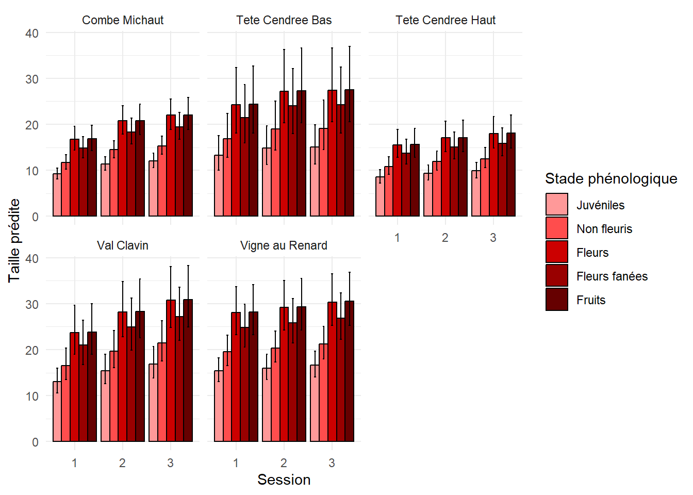
Méthode d’interprétation : Le graphique présente les tailles moyennes prédites par le modèle pour chaque combinaison de site, phénologie et session, avec les barres d’erreur représentant la variabilité estimée. Chaque panel correspond à un site et chaque groupe de barres indique les sessions 1 à 3. Les couleurs reflètent les stades phénologiques. Ce graphique permet de comparer à la fois l’évolution de la taille entre les sessions et les différences de taille entre stades phénologiques et sites. Des barres plus hautes indiquent des tailles moyennes plus importantes, et la progression des barres entre les sessions illustre l’augmentation de la taille prévue au fil du temps pour chaque stade et site.
Résultats : Ce graphique montre que la taille prédite augmente clairement entre les sessions 1, 2 et 3, quel que soit le site ou le stade phénologique. Les individus en phases avancées de phénologie (fleurs fanées, fruits) sont systématiquement plus grands, et cette tendance est cohérente dans tous les sites.
Effet Session
Effet propre de la session, toutes phénologies et tous sites confondus (prédiction marginale).
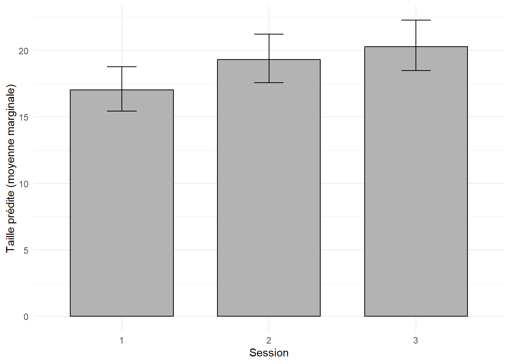
| contrast | ratio | SE | df | null | z.ratio | p.value |
|---|---|---|---|---|---|---|
| session1 / session2 | 0.882 | 0.0128 | Inf | 1 | -8.66 | 0.00000 |
| session1 / session3 | 0.839 | 0.0127 | Inf | 1 | -11.57 | 0.00000 |
| session2 / session3 | 0.952 | 0.0137 | Inf | 1 | -3.43 | 0.00172 |
Méthode d’interprétation : Ce tableau présente les contrastes entre sessions à partir des moyennes marginales estimées. Le ratio indique l’effet multiplicatif entre deux sessions : un ratio inférieur à 1 signifie que la première session a une valeur plus faible que la seconde. Le z‑ratio et la p‑value testent si cette différence est statistiquement significative. Les comparaisons avec p\(_{value}\) < 0.05 sont considérées comme significatives.
Résultats : Les comparaisons montrent que la session 1 a des valeurs significativement plus faibles que les sessions 2 et 3 (ratios < 1 et p\(_{value}\) < 0.001). La session 2 est également légèrement mais significativement plus faible que la session 3 (p\(_{value}\) = 0.0015). Les tailles prédites augmentent significativement donc d’une session à l’autre.
Effet Phénologie
Effet propre de la phénologie, toutes sessions et tous sites confondus (prédiction marginale).
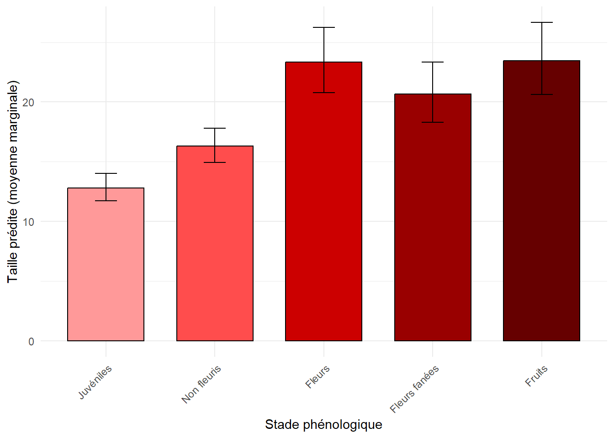
| contrast | ratio | SE | df | null | z.ratio | p.value |
|---|---|---|---|---|---|---|
| fleur / fleurs_fanees | 1.130 | 0.0561 | Inf | 1 | 2.47 | 9.69e-02 |
| fleur / fruit | 0.996 | 0.0475 | Inf | 1 | -0.09 | 1.00e+00 |
| fleur / juv | 1.823 | 0.0833 | Inf | 1 | 13.15 | 0.00e+00 |
| fleur / non_fleuri | 1.432 | 0.0595 | Inf | 1 | 8.65 | 0.00e+00 |
| fleurs_fanees / fruit | 0.881 | 0.0487 | Inf | 1 | -2.29 | 1.47e-01 |
| fleurs_fanees / juv | 1.613 | 0.0764 | Inf | 1 | 10.09 | 0.00e+00 |
| fleurs_fanees / non_fleuri | 1.267 | 0.0557 | Inf | 1 | 5.39 | 7.00e-07 |
| fruit / juv | 1.831 | 0.0969 | Inf | 1 | 11.42 | 0.00e+00 |
| fruit / non_fleuri | 1.438 | 0.0699 | Inf | 1 | 7.48 | 0.00e+00 |
| juv / non_fleuri | 0.786 | 0.0156 | Inf | 1 | -12.17 | 0.00e+00 |
Méthode d’interprétation : Ce tableau compare les tailles prédites entre les différents stades phénologiques. Le ratio indique combien la première catégorie est plus grande (ratio > 1) ou plus petite (ratio < 1) que la seconde. Les valeurs de p montrent si ces différences sont statistiquement significatives. Les contrastes avec p\(_{value}\) < 0.05 révèlent des différences nettes entre phénologies, tandis que les ratios proches de 1 et non significatifs indiquent des tailles similaires entre stades.
Résultats : Les contrastes montrent une progression nette de la taille au cours de la phénologie. Les stades juvénile et non fleuri sont significativement plus petits que tous les stades floraux et post‑floraux. En revanche, les stades fleur, fleurs fanées et fruit présentent des tailles similaires, sans différences significatives entre eux. Globalement, le modèle met en évidence une augmentation marquée de la taille entre les phases précoces et les phases florales, suivie d’une stabilisation une fois la floraison engagée.
Effet Site
Effet propre du site , toutes sessions et toutes phénologies confondus (prédiction marginale).
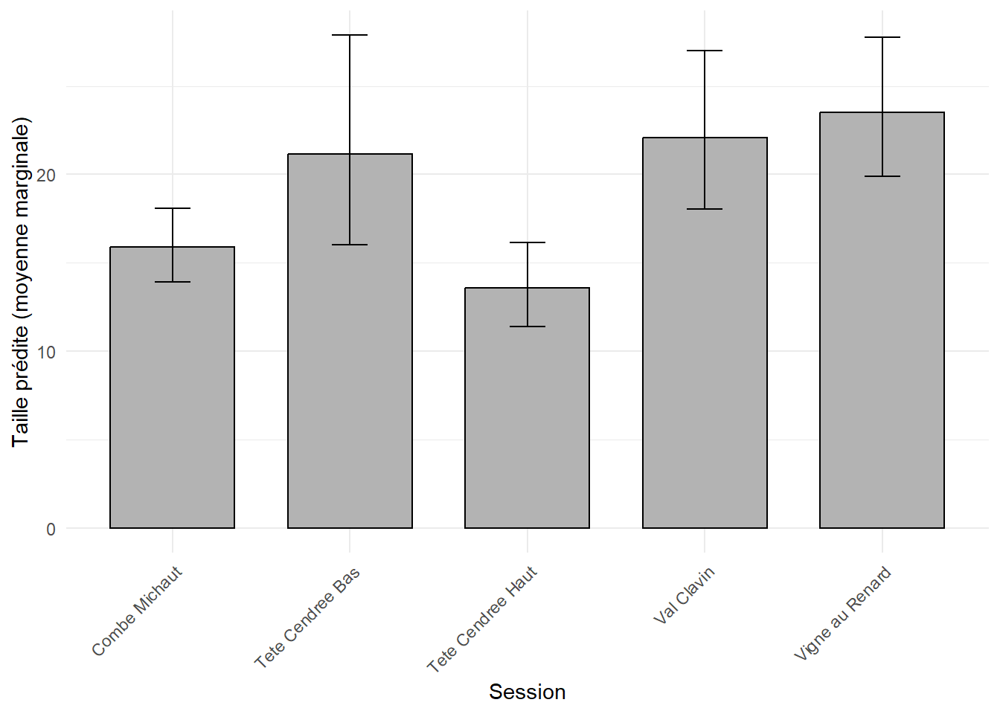
| contrast | ratio | SE | df | null | z.ratio | p.value |
|---|---|---|---|---|---|---|
| Combe Michaut / Tete Cendree Bas | 0.751 | 0.1159 | Inf | 1 | -1.85 | 3.43e-01 |
| Combe Michaut / Tete Cendree Haut | 1.171 | 0.1264 | Inf | 1 | 1.46 | 5.90e-01 |
| Combe Michaut / Val Clavin | 0.719 | 0.0874 | Inf | 1 | -2.72 | 5.18e-02 |
| Combe Michaut / Vigne au Renard | 0.675 | 0.0706 | Inf | 1 | -3.76 | 1.61e-03 |
| Tete Cendree Bas / Tete Cendree Haut | 1.558 | 0.2563 | Inf | 1 | 2.70 | 5.46e-02 |
| Tete Cendree Bas / Val Clavin | 0.957 | 0.1634 | Inf | 1 | -0.26 | 9.99e-01 |
| Tete Cendree Bas / Vigne au Renard | 0.899 | 0.1462 | Inf | 1 | -0.66 | 9.66e-01 |
| Tete Cendree Haut / Val Clavin | 0.614 | 0.0820 | Inf | 1 | -3.65 | 2.43e-03 |
| Tete Cendree Haut / Vigne au Renard | 0.577 | 0.0692 | Inf | 1 | -4.58 | 4.51e-05 |
| Val Clavin / Vigne au Renard | 0.939 | 0.1235 | Inf | 1 | -0.48 | 9.90e-01 |
Méthode d’interprétation : Ce tableau présente les contrastes entre sites à partir des moyennes marginales estimées. Le ratio indique si la taille prédite est plus élevée dans le premier site du contraste (ratio > 1) ou plus faible (ratio < 1). Le z‑ratio et la p‑value testent la significativité statistique de cette différence. Les contrastes dont la p\(_{value}\) est faible (p\(_{value}\) < 0.05) révèlent des différences nettes entre sites, tandis que les ratios proches de 1 et non significatifs indiquent des tailles similaires. Ce type de tableau permet donc d’identifier rapidement quels sites se distinguent réellement les uns des autres.
Résultats : Les contrastes montrent que la plupart des sites présentent des tailles prédictes similaires, avec peu de différences statistiquement significatives. Seuls quelques écarts ressortent, notamment des tailles plus élevées à Tête Cendrée Bas, Val Clavin et Vigne au Renard par rapport aux autres sites. Dans l’ensemble, la variabilité entre sites reste limitée, et seules quelques comparaisons isolées indiquent des différences marquées.
I.ii Analyse générale sans modélisation
I.ii.i Relation taille et phénologie
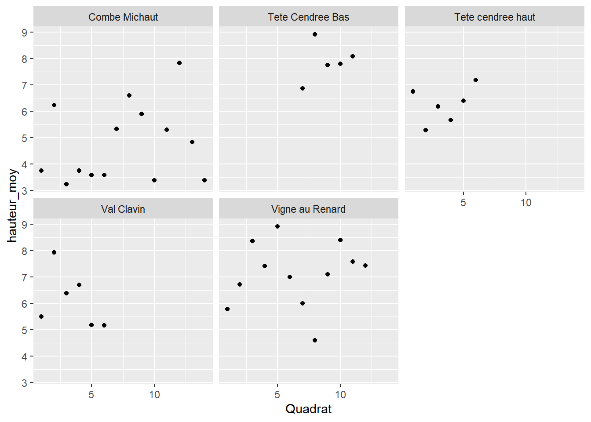
| group1 | group2 | p | p.adj |
|---|---|---|---|
| Juvéniles | Non fleuris | 0.000000 | 0.00000 |
| Juvéniles | Fleurs | 0.000000 | 0.00000 |
| Juvéniles | Fleurs fanées | 0.000000 | 0.00000 |
| Juvéniles | Fruits | 0.000000 | 0.00000 |
| Non fleuris | Fleurs | 0.000000 | 0.00000 |
| Non fleuris | Fleurs fanées | 0.000000 | 0.00000 |
| Non fleuris | Fruits | 0.000000 | 0.00000 |
| Fleurs | Fleurs fanées | 0.021000 | 0.02300 |
| Fleurs | Fruits | 0.024000 | 0.02400 |
| Fleurs fanées | Fruits | 0.000216 | 0.00027 |
Méthode d’interprétation : Ce type de tableau présente les comparaisons deux à deux entre groupes, ici entre phénologies, à l’aide d’un test de Wilcoxon. Pour chaque paire, on indique les deux groupes comparés ainsi que la p\(_{value}\) brute et la p\(_{value}\) ajustée, cette dernière tenant compte du nombre total de comparaisons. Cela permet d’identifier rapidement quelles paires de groupes diffèrent réellement de manière significative.
Résultats : Les tailles diffèrent significativement entre l’ensemble des stades phénologiques (tests de Wilcoxon deux à deux avec correction de Benjamini–Hochberg). Les stades précoces (juvéniles et non fleuris) présentent des différences très marquées avec tous les stades plus avancés (p\(_{adj}\) ≪ 0,001), indiquant une augmentation nette de la taille au cours du développement. Les différences entre les stades tardifs (fleur, fruit et fleurs fanées) restent significatives, bien que plus faibles, suggérant une progression continue de la taille jusqu’aux phases finales du cycle phénologique. Ces résultats confirment une relation étroite entre la taille des individus et leur stade phénologique.
I.ii.ii Analyse de la variation dans le temps
Dans un premier temps, nous avons étudié la variation des données au cours du temps afin d’obtenir une vision dynamique de leur évolution.
Effet de la session sur la taille
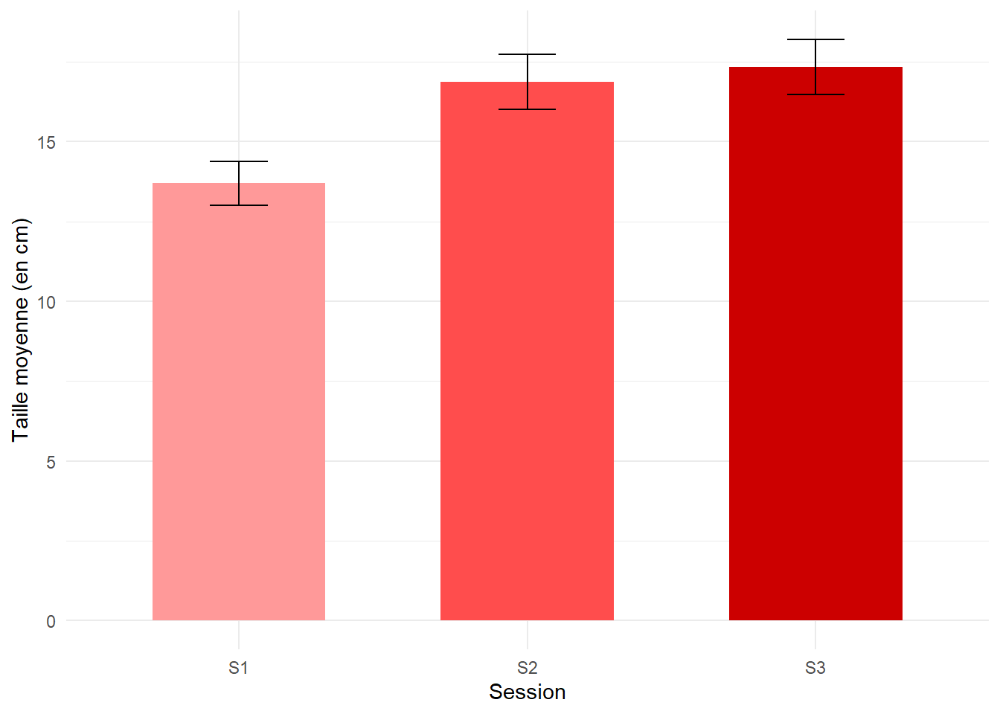
| group1 | group2 | p | p.adj |
|---|---|---|---|
| S1 | S2 | 3.00e-07 | 4.00e-07 |
| S1 | S3 | 0.00e+00 | 0.00e+00 |
| S2 | S3 | 3.56e-01 | 3.56e-01 |
Méthode d’interprétation : Le graphique montre la taille moyenne des individus par session avec les barres d’erreur représentant l’intervalle de confiance à 95 %. Le tableau compare les sessions deux à deux pour voir si leur taille diffère significativement. Les colonnes p et p\(_{adj}\) indiquent la significativité du test : des valeurs très faibles montrent une différence nette entre les deux sessions, tandis qu’une valeur élevée signifie qu’elles ne diffèrent pas. Chaque ligne résume donc si la paire de sessions considérée présente ou non une différence statistiquement détectable.
Résultats : Nous observons une augmentation progressive de la taille : la moyenne passe de S1 (~13,7) à S2 (~16,9) puis à S3 (~17,3). L’augmentation est statistiquement significative.
Effet de la session sur la phénologie
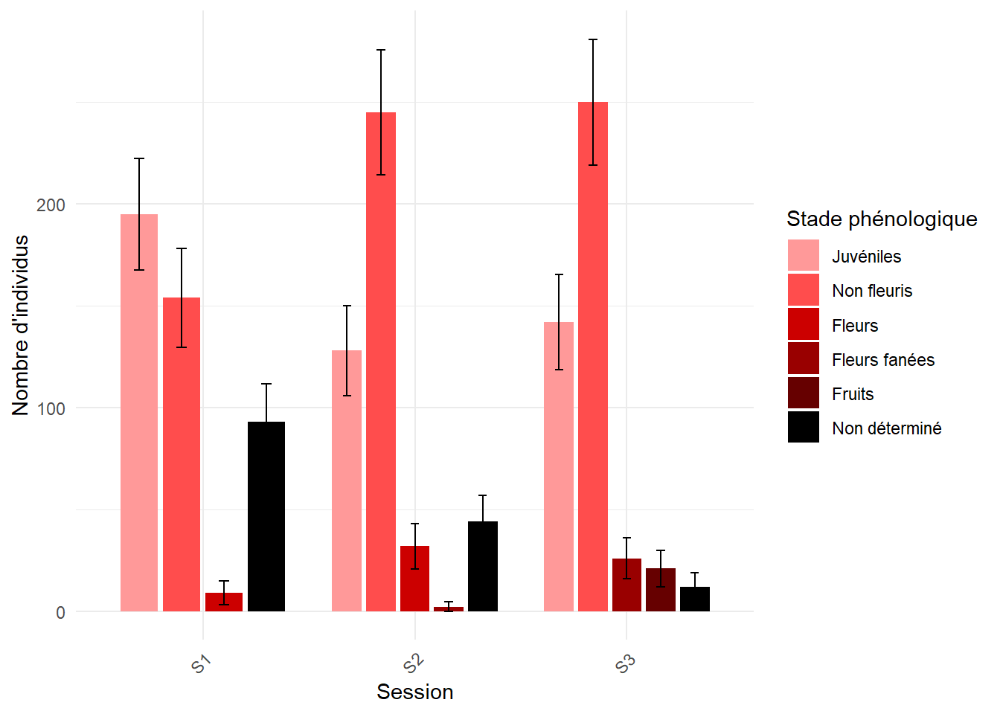
| session | pheno | n | se | ci_lower | ci_upper |
|---|---|---|---|---|---|
| S1 | Juvéniles | 195 | 13.96 | 167.63 | 222.37 |
| S1 | Non fleuris | 154 | 12.41 | 129.68 | 178.32 |
| S1 | Fleurs | 9 | 3.00 | 3.12 | 14.88 |
| S1 | Non déterminé | 93 | 9.64 | 74.10 | 111.90 |
| S2 | Juvéniles | 128 | 11.31 | 105.83 | 150.17 |
| S2 | Non fleuris | 245 | 15.65 | 214.32 | 275.68 |
| S2 | Fleurs | 32 | 5.66 | 20.91 | 43.09 |
| S2 | Fleurs fanées | 2 | 1.41 | 0.00 | 4.77 |
| S2 | Non déterminé | 44 | 6.63 | 31.00 | 57.00 |
| S3 | Juvéniles | 142 | 11.92 | 118.64 | 165.36 |
| S3 | Non fleuris | 250 | 15.81 | 219.01 | 280.99 |
| S3 | Fleurs fanées | 26 | 5.10 | 16.01 | 35.99 |
| S3 | Fruits | 21 | 4.58 | 12.02 | 29.98 |
| S3 | Non déterminé | 12 | 3.46 | 5.21 | 18.79 |
Méthode d’interprétation : Le graphique montre la taille moyenne des individus par phénologie avec les barres d’erreur représentant l’intervalle de confiance à 95 %. Ce tableau présente, pour chaque session (S1, S2, S3) et chaque type phénologique, le nombre d’individus observés (n). La colonne se indique l’erreur standard associée à cet effectif, et les colonnes ci_lower et ci_upper donnent les bornes de l’intervalle de confiance à 95 %, c’est‑à‑dire la zone dans laquelle l’effectif réel est probablement situé. Chaque ligne correspond donc à une combinaison session × phéno et résume combien d’individus ont été comptés et la précision de cette estimation.
Résultats : Nous observons que S1 est dominée par les stades j et nf, avec relativement peu de fleurs et un nombre notable de données manquantes. En S2, le stade nf devient majoritaire et les stades reproducteurs (f et ff) apparaissent davantage. En S3, les stades avancés (ff et F) sont plus représentés, tandis que les stades précoces diminuent.
I.ii.iii Analyse de la variation dans l’espace
Dans un second temps, nous avons étudié la variation des données dans l’espace afin d’obtenir une vision spatiale de leur évolution.
Effet du site
Effet du site sur la taille

| session | pheno | n | se | ci_lower | ci_upper |
|---|---|---|---|---|---|
| S1 | Juvéniles | 195 | 13.96 | 167.63 | 222.37 |
| S1 | Non fleuris | 154 | 12.41 | 129.68 | 178.32 |
| S1 | Fleurs | 9 | 3.00 | 3.12 | 14.88 |
| S1 | Non déterminé | 93 | 9.64 | 74.10 | 111.90 |
| S2 | Juvéniles | 128 | 11.31 | 105.83 | 150.17 |
| S2 | Non fleuris | 245 | 15.65 | 214.32 | 275.68 |
| S2 | Fleurs | 32 | 5.66 | 20.91 | 43.09 |
| S2 | Fleurs fanées | 2 | 1.41 | 0.00 | 4.77 |
| S2 | Non déterminé | 44 | 6.63 | 31.00 | 57.00 |
| S3 | Juvéniles | 142 | 11.92 | 118.64 | 165.36 |
| S3 | Non fleuris | 250 | 15.81 | 219.01 | 280.99 |
| S3 | Fleurs fanées | 26 | 5.10 | 16.01 | 35.99 |
| S3 | Fruits | 21 | 4.58 | 12.02 | 29.98 |
| S3 | Non déterminé | 12 | 3.46 | 5.21 | 18.79 |
Méthode d’interprétation : Le graphique montre la taille moyenne des individus par sites avec les barres d’erreur représentant l’intervalle de confiance à 95 %. Le tableau présente, pour chaque session et chaque type phénologique, le nombre d’individus observés ainsi que l’incertitude associée à ces effectifs. Les colonnes indiquent l’erreur standard et les bornes de l’intervalle de confiance à 95 %, ce qui permet d’apprécier la précision des estimations. La lecture se fait ligne par ligne : chaque combinaison session × phéno résume combien d’individus ont été comptés et dans quelle mesure cet effectif est fiable statistiquement.
Résultats : S1 est dominée par les stades précoces, S2 voit apparaître davantage de stades reproducteurs, et S3 présente surtout des stades avancés. Les intervalles de confiance indiquent la précision des effectifs : ils sont serrés pour les stades fréquents et plus larges pour les stades rares. En résumé, le tableau illustre une progression nette de la phénologie au fil des sessions.
Effet du site sur la taille selon la session

| site | taille_type | mean | sd | n | se | ci95 |
|---|---|---|---|---|---|---|
| Combe Michaut | tailleS1 | 11.35 | 4.75 | 149 | 0.39 | 0.77 |
| Combe Michaut | tailleS2 | 15.75 | 7.11 | 165 | 0.55 | 1.09 |
| Combe Michaut | tailleS3 | 16.58 | 7.38 | 178 | 0.55 | 1.09 |
| Tete Cendree Bas | tailleS1 | 17.27 | 7.02 | 26 | 1.38 | 2.84 |
| Tete Cendree Bas | tailleS2 | 19.69 | 7.58 | 27 | 1.46 | 3.00 |
| Tete Cendree Bas | tailleS3 | 20.05 | 7.62 | 27 | 1.47 | 3.01 |
| Tete Cendree Haut | tailleS1 | 10.55 | 3.90 | 97 | 0.40 | 0.79 |
| Tete Cendree Haut | tailleS2 | 11.82 | 4.53 | 123 | 0.41 | 0.81 |
| Tete Cendree Haut | tailleS3 | 12.19 | 4.98 | 134 | 0.43 | 0.85 |
| Val Clavin | tailleS1 | 21.23 | 7.00 | 37 | 1.15 | 2.33 |
| Val Clavin | tailleS2 | 29.29 | 10.39 | 42 | 1.60 | 3.24 |
| Val Clavin | tailleS3 | 28.93 | 11.17 | 51 | 1.56 | 3.14 |
| Vigne au Renard | tailleS1 | 19.57 | 6.49 | 48 | 0.94 | 1.88 |
| Vigne au Renard | tailleS2 | 21.02 | 9.52 | 50 | 1.35 | 2.70 |
| Vigne au Renard | tailleS3 | 20.54 | 10.56 | 49 | 1.51 | 3.03 |
Méthode d’interprétation : Le graphique montre la taille moyenne des individus par sites et par session avec les barres d’erreur représentant l’intervalle de confiance à 95 %. Le tableau présente, pour chaque site et chaque session, la taille moyenne observée ainsi que les indicateurs de variabilité associés. Les colonnes indiquent l’écart‑type, le nombre d’individus mesurés, l’erreur standard et l’intervalle de confiance à 95 %, ce qui permet d’évaluer la précision des moyennes. Chaque ligne correspond donc à une combinaison site × session et résume la valeur moyenne et la fiabilité statistique de cette estimation.
Résultats : Les sites présentent des dynamiques de taille différentes. À Tête Cendrée Bas, les tailles sont globalement élevées et augmentent légèrement entre S1 et S3, mais les faibles effectifs rendent les intervalles de confiance plus larges. À Tête Cendrée Haut, les tailles sont plus faibles mais progressent régulièrement, avec des estimations précises grâce à des effectifs importants. Val Clavin est le site où les tailles sont les plus grandes, avec une forte hausse entre S1 et S2 suivie d’une stabilisation, et des intervalles de confiance raisonnables malgré des effectifs modestes. Enfin, à Vigne au Renard, les tailles sont intermédiaires, augmentent légèrement entre S1 et S2 puis se stabilisent, avec des intervalles de confiance un peu plus larges mais une tendance générale nette.
Effet du site sur la phénologie
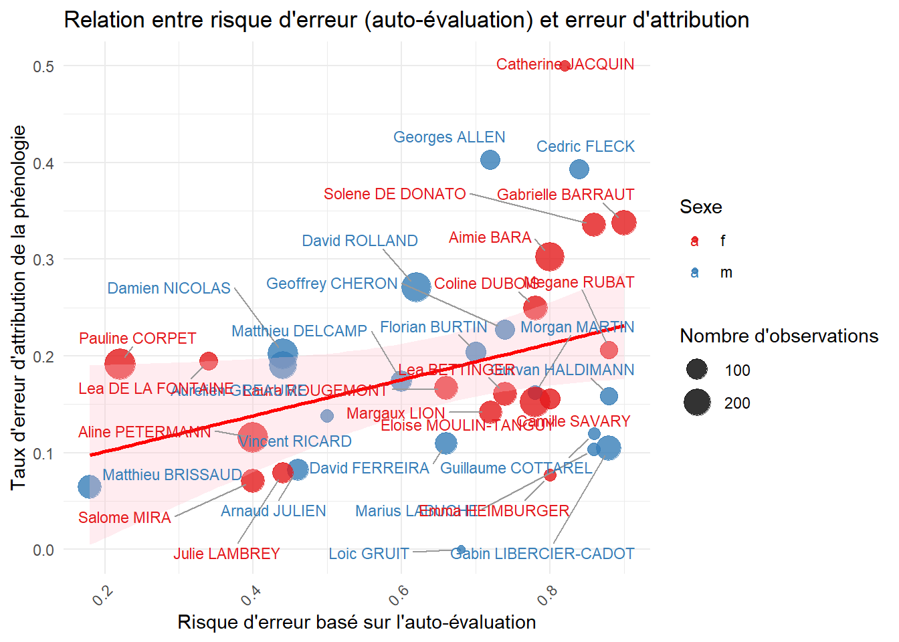
| site | pheno | n | se | ci_lower | ci_upper |
|---|---|---|---|---|---|
| Combe Michaut | Juvéniles | 151 | 12.29 | 126.92 | 175.08 |
| Combe Michaut | Non fleuris | 303 | 17.41 | 268.88 | 337.12 |
| Combe Michaut | Fleurs | 16 | 4.00 | 8.16 | 23.84 |
| Combe Michaut | Fleurs fanées | 13 | 3.61 | 5.93 | 20.07 |
| Combe Michaut | Fruits | 9 | 3.00 | 3.12 | 14.88 |
| Combe Michaut | Non déterminé | 51 | 7.14 | 37.00 | 65.00 |
| Tete Cendree Bas | Juvéniles | 30 | 5.48 | 19.26 | 40.74 |
| Tete Cendree Bas | Non fleuris | 50 | 7.07 | 36.14 | 63.86 |
| Tete Cendree Bas | Fleurs | 0 | 0.00 | 0.00 | 0.00 |
| Tete Cendree Bas | Fleurs fanées | 0 | 0.00 | 0.00 | 0.00 |
| Tete Cendree Bas | Fruits | 0 | 0.00 | 0.00 | 0.00 |
| Tete Cendree Bas | Non déterminé | 1 | 1.00 | 0.00 | 2.96 |
| Tete Cendree Haut | Juvéniles | 226 | 15.03 | 196.53 | 255.47 |
| Tete Cendree Haut | Non fleuris | 128 | 11.31 | 105.83 | 150.17 |
| Tete Cendree Haut | Fleurs | 0 | 0.00 | 0.00 | 0.00 |
| Tete Cendree Haut | Fleurs fanées | 0 | 0.00 | 0.00 | 0.00 |
| Tete Cendree Haut | Fruits | 1 | 1.00 | 0.00 | 2.96 |
| Tete Cendree Haut | Non déterminé | 59 | 7.68 | 43.94 | 74.06 |
| Val Clavin | Juvéniles | 14 | 3.74 | 6.67 | 21.33 |
| Val Clavin | Non fleuris | 74 | 8.60 | 57.14 | 90.86 |
| Val Clavin | Fleurs | 21 | 4.58 | 12.02 | 29.98 |
| Val Clavin | Fleurs fanées | 13 | 3.61 | 5.93 | 20.07 |
| Val Clavin | Fruits | 8 | 2.83 | 2.46 | 13.54 |
| Val Clavin | Non déterminé | 35 | 5.92 | 23.40 | 46.60 |
| Vigne au Renard | Juvéniles | 44 | 6.63 | 31.00 | 57.00 |
| Vigne au Renard | Non fleuris | 94 | 9.70 | 75.00 | 113.00 |
| Vigne au Renard | Fleurs | 4 | 2.00 | 0.08 | 7.92 |
| Vigne au Renard | Fleurs fanées | 2 | 1.41 | 0.00 | 4.77 |
| Vigne au Renard | Fruits | 3 | 1.73 | 0.00 | 6.39 |
| Vigne au Renard | Non déterminé | 3 | 1.73 | 0.00 | 6.39 |
Méthode d’interprétation : Le graphique montre la nombre d’individu par sites et par phénologie avec les barres d’erreur représentant l’intervalle de confiance à 95 %. Ce tableau présente, pour chaque site et chaque type phénologique, le nombre d’individus observés ainsi que l’incertitude associée à ces effectifs. Les colonnes indiquent l’erreur standard et les bornes de l’intervalle de confiance à 95 %, ce qui permet d’évaluer la précision des comptages. Chaque ligne correspond à une combinaison site × phéno et résume combien d’individus ont été observés dans chaque catégorie phénologique, ainsi que la fiabilité statistique de cette estimation.
Résultats : Les sites présentent des profils phénologiques contrastés. À Combe Michaut, tous les stades sont représentés, avec une forte présence des stades précoces et intermédiaires. À Tête Cendrée Bas, seuls les stades précoces sont observés, les stades reproducteurs étant absents, ce qui reflète une phénologie très peu avancée. À Tête Cendrée Haut, les stades précoces dominent également, avec très peu d’individus dans les stades avancés. Val Clavin présente une gamme complète de stades, incluant des stades reproducteurs plus avancés. Enfin, à Vigne au Renard, tous les stades sont présents mais en effectifs plus faibles, tout en montrant une progression phénologique plus marquée que dans les sites les plus précoces.
Effet de la strate
Relation recouvrement végétal et site
Régression Multinomiale
La régression multinomiale est un modèle statistique adapté aux variables réponses catégorielles comportant plus de deux modalités sans ordre naturel. La phénologie constitue un état discret et non ordonné, présentant plusieurs modalités. Une RDA n’est pas appropriée ici, car elle suppose une variable réponse continue et cherche à établir des relations linéaires.
Toutes sessions
Nous réalisons l’analyse sur l’ensemble des sessions confondues, en prenant le stade non fleuri comme référence, c’est-à-dire que nous comparons les probabilités des différents états selon la strate par rapport à ce stade.
# weights: 35 (24 variable)
initial value 10699.543242
iter 10 value 7468.895149
iter 20 value 7232.851109
iter 30 value 5941.151016
iter 40 value 5929.491729
iter 50 value 5927.431191
iter 60 value 5927.358068
iter 70 value 5927.332607
iter 80 value 5926.934692
iter 90 value 5926.872670
iter 90 value 5926.872624
iter 90 value 5926.872624
final value 5926.872624
converged| Etat | Parametre | Coefficient | SE | z | p_value | Signif |
|---|---|---|---|---|---|---|
| fleur | (Intercept) | -8.4725 | 0.8487 | -9.983 | 0.00e+00 | *** |
| fleur | S_muscinale | -4.6676 | 0.6699 | -6.967 | 0.00e+00 | *** |
| fleur | S_herbacee | -115.4957 | 0.0038 | -30533.288 | 0.00e+00 | *** |
| fleur | S_arbustive_basse | 0.3500 | 0.2330 | 1.502 | 1.33e-01 | |
| fleur | S_arbustive_haute | -0.0365 | 0.0309 | -1.181 | 2.38e-01 | |
| fleur | S_arborescente | 0.0171 | 0.0358 | 0.477 | 6.33e-01 | |
| fleurs_fanees | (Intercept) | -0.0578 | 0.0411 | -1.406 | 1.60e-01 | |
| fleurs_fanees | S_muscinale | 0.1027 | 0.0090 | 11.428 | 0.00e+00 | *** |
| fleurs_fanees | S_herbacee | 0.3560 | 0.0828 | 4.302 | 1.70e-05 | *** |
| fleurs_fanees | S_arbustive_basse | -0.0680 | 0.0680 | -1.000 | 3.17e-01 | |
| fleurs_fanees | S_arbustive_haute | 11.0334 | 0.0378 | 291.685 | 0.00e+00 | *** |
| fleurs_fanees | S_arborescente | 0.0020 | 0.0176 | 0.115 | 9.09e-01 | |
| fruit | (Intercept) | 0.3038 | 0.0554 | 5.481 | 0.00e+00 | *** |
| fruit | S_muscinale | 0.4898 | 0.0787 | 6.225 | 0.00e+00 | *** |
| fruit | S_herbacee | 0.2573 | 0.0647 | 3.974 | 7.07e-05 | *** |
| fruit | S_arbustive_basse | -0.1948 | 0.0226 | -8.629 | 0.00e+00 | *** |
| fruit | S_arbustive_haute | -0.0333 | 0.0593 | -0.562 | 5.74e-01 | |
| fruit | S_arborescente | -0.2811 | 0.0785 | -3.580 | 3.44e-04 | *** |
| juv | (Intercept) | 0.1105 | 0.0727 | 1.520 | 1.28e-01 | |
| juv | S_muscinale | -0.0437 | 0.0193 | -2.267 | 2.34e-02 | * |
| juv | S_herbacee | 0.2772 | 0.0316 | 8.773 | 0.00e+00 | *** |
| juv | S_arbustive_basse | 0.1271 | 0.0333 | 3.811 | 1.38e-04 | *** |
| juv | S_arbustive_haute | 0.2296 | 0.0432 | 5.312 | 1.00e-07 | *** |
| juv | S_arborescente | -0.1159 | 0.0126 | -9.212 | 0.00e+00 | *** |
Méthode d’interprétation : Dans ce tableau de régression multinomiale, chaque ligne indique l’effet d’une strate de végétation sur la probabilité d’appartenir à un état phénologique donné, comparé à la catégorie de référence. La colonne Coefficient montre si la strate augmente (valeur positive) ou diminue (valeur négative) cette probabilité, tandis que l’erreur standard (SE), la statistique z et la p\(_{value}\) renseignent sur la précision de l’estimation et sa significativité. La colonne Signif résume visuellement cette significativité. Ensemble, ces informations permettent d’identifier quelles strates influencent réellement la transition d’un état phénologique à un autre et dans quel sens.
Résultats : Les résultats montrent un gradient phénologique structuré par l’ouverture du milieu : Milieux ouverts (herbacées) → stades avancés (fleurs fanées, fruits), peu de juvéniles. Milieux semi‑fermés (arbustif bas) → forte probabilité de fleurs fanées et de fruits. Milieux très fermés (arbustif haut, arborescent) → stades précoces (non fleuri, juvénile), peu de stades avancés. Mousse → effet faible ou non significatif, sauf absence quasi totale de fleurs fanées dans ces micro‑habitats.
La structure verticale du recouvrement influence donc fortement la progression phénologique, avec un cycle plus avancé dans les milieux ouverts ou semi‑ouverts, et plus précoce dans les milieux fermés.
Session 2 (Pour Fleurs)
Comme nous souhaitons estimer la probabilité de présence d’un stade phénologique selon les strates, il est préférable de se concentrer sur la session où le stade étudié est le plus fréquent, afin d’éviter un biais lié au nombre d’individus, très important si toutes les sessions sont combinées. Ici, le stade fleurs est beaucoup plus présent lors de la session 2, ce qui permet un effort d’échantillonnage plus important et donc des estimations plus robustes.
# weights: 28 (18 variable)
initial value 2825.267908
iter 10 value 1989.784008
iter 20 value 1568.063118
iter 30 value 1534.589918
iter 40 value 1534.420340
iter 50 value 1534.399095
iter 60 value 1533.945574
iter 70 value 1527.512924
final value 1527.296415
converged| Etat | Parametre | Coefficient | SE | z | p_value | Signif |
|---|---|---|---|---|---|---|
| fleur | (Intercept) | -13.1367 | 2.2800 | -5.762 | 0.00e+00 | *** |
| fleur | S_muscinale | 3211.1888 | 2.0283 | 1583.158 | 0.00e+00 | *** |
| fleur | S_herbacee | -0.5784 | 0.4540 | -1.274 | 2.03e-01 | |
| fleur | S_arbustive_basse | -0.0151 | 0.0424 | -0.355 | 7.22e-01 | |
| fleur | S_arbustive_haute | -34.7038 | 4.8356 | -7.177 | 0.00e+00 | *** |
| fleur | S_arborescente | 0.1707 | 0.0179 | 9.546 | 0.00e+00 | *** |
| fleurs_fanees | (Intercept) | 0.7918 | 0.2270 | 3.488 | 4.87e-04 | *** |
| fleurs_fanees | S_muscinale | -457.6747 | 2.7985 | -163.542 | 0.00e+00 | *** |
| fleurs_fanees | S_herbacee | 0.0004 | 0.0330 | 0.012 | 9.90e-01 | |
| fleurs_fanees | S_arbustive_basse | 0.4596 | 0.0711 | 6.461 | 0.00e+00 | *** |
| fleurs_fanees | S_arbustive_haute | 352.4732 | 4.0728 | 86.542 | 0.00e+00 | *** |
| fleurs_fanees | S_arborescente | -0.1955 | 0.0457 | -4.274 | 1.92e-05 | *** |
| juv | (Intercept) | 0.0427 | 0.0751 | 0.569 | 5.70e-01 | |
| juv | S_muscinale | 8.7551 | 10.3225 | 0.848 | 3.96e-01 | |
| juv | S_herbacee | -0.0155 | 0.0377 | -0.410 | 6.82e-01 | |
| juv | S_arbustive_basse | 0.3158 | 0.0431 | 7.318 | 0.00e+00 | *** |
| juv | S_arbustive_haute | -383.0645 | 10.2662 | -37.313 | 0.00e+00 | *** |
| juv | S_arborescente | -0.0811 | 0.0256 | -3.166 | 1.54e-03 | ** |
Résultats : La régression multinomiale sur la session 2, avec le stade non fleuri comme référence, montre que la probabilité d’être au stade fleur est fortement favorisée par la strate S_muscinale et la strate S_arborescente, et fortement réduite par la strate S_arbustive_haute. Cela suggère que les plantes en fleurs se concentrent dans les zones muscinales et arborescentes, probablement en raison d’un meilleur microclimat ou d’un accès optimal à la lumière.
Le stade fleurs fanées est favorisé dans les strates S_arbustive_basse et S_arbustive_haute, mais limité dans S_muscinale et S_arborescente, indiquant que la sénescence des fleurs est plus marquée dans les strates arbustives, peut-être liées à la densité végétale et à l’ombrage.
Enfin, le stade juv est favorisé dans S_arbustive_basse mais fortement réduit dans S_arbustive_haute et S_arborescente, ce qui montre que les jeunes individus se concentrent dans les strates basses et ouvertes, probablement pour éviter la compétition et l’ombre des strates plus hautes.
Session 3 (Fleurs fanées et Fruits)
Nous réalisons la même chose à la session 3 pour les stades : fleurs fanées et Fruits
# weights: 28 (18 variable)
initial value 3525.346560
iter 10 value 2524.363052
iter 20 value 2201.151473
iter 30 value 2180.626131
iter 40 value 2179.299211
iter 50 value 2179.281681
iter 60 value 2179.229246
iter 70 value 2179.153948
final value 2179.153840
converged| Etat | Parametre | Coefficient | SE | z | p_value | Signif |
|---|---|---|---|---|---|---|
| fleurs_fanees | (Intercept) | -5.6952 | 0.8804 | -6.469 | 0.00e+00 | *** |
| fleurs_fanees | S_muscinale | -127.5276 | 0.0040 | -31810.465 | 0.00e+00 | *** |
| fleurs_fanees | S_herbacee | -1.7488 | 0.4066 | -4.301 | 1.70e-05 | *** |
| fleurs_fanees | S_arbustive_basse | 0.0249 | 0.0404 | 0.615 | 5.38e-01 | |
| fleurs_fanees | S_arbustive_haute | -0.0415 | 0.0427 | -0.973 | 3.31e-01 | |
| fleurs_fanees | S_arborescente | 0.2110 | 0.0161 | 13.115 | 0.00e+00 | *** |
| fruit | (Intercept) | 0.0549 | 0.0882 | 0.623 | 5.34e-01 | |
| fruit | S_muscinale | 12.2580 | 0.0401 | 305.764 | 0.00e+00 | *** |
| fruit | S_herbacee | 0.0239 | 0.0305 | 0.783 | 4.34e-01 | |
| fruit | S_arbustive_basse | 0.5738 | 0.0839 | 6.836 | 0.00e+00 | *** |
| fruit | S_arbustive_haute | 0.3600 | 0.0686 | 5.248 | 2.00e-07 | *** |
| fruit | S_arborescente | -0.0479 | 0.0399 | -1.201 | 2.30e-01 | |
| juv | (Intercept) | -0.2294 | 0.0873 | -2.627 | 8.60e-03 | ** |
| juv | S_muscinale | 0.1592 | 0.0774 | 2.056 | 3.98e-02 | * |
| juv | S_herbacee | 0.0855 | 0.0328 | 2.602 | 9.26e-03 | ** |
| juv | S_arbustive_basse | 0.1824 | 0.0388 | 4.704 | 2.60e-06 | *** |
| juv | S_arbustive_haute | 0.2600 | 0.0452 | 5.757 | 0.00e+00 | *** |
| juv | S_arborescente | -0.0636 | 0.0224 | -2.839 | 4.53e-03 | ** |
Résultats : La régression multinomiale sur la session 3, avec le stade non fleuri comme référence, montre que le stade fleurs fanées est fortement favorisé dans la strate S_arborescente et fortement limité dans les strates S_muscinale et S_herbacee, indiquant que la sénescence des fleurs se concentre dans les zones boisées où les conditions microclimatiques semblent favoriser leur persistance.
Pour le stade fruit, les probabilités sont significativement accrues dans les strates S_muscinale, S_arbustive_basse et S_arbustive_haute, suggérant que la fructification est plus favorable dans les zones ouvertes et arbustives, probablement en raison d’un meilleur accès à la lumière ou à la pollinisation.
Le stade juv est favorisé dans les strates basses et herbacées (S_arbustive_basse, S_herbacee, S_muscinale) mais limité dans S_arborescente, indiquant que les jeunes individus se concentrent dans des habitats ouverts, probablement pour éviter l’ombre et la compétition des strates plus hautes.
Effet de la strate sur la taille
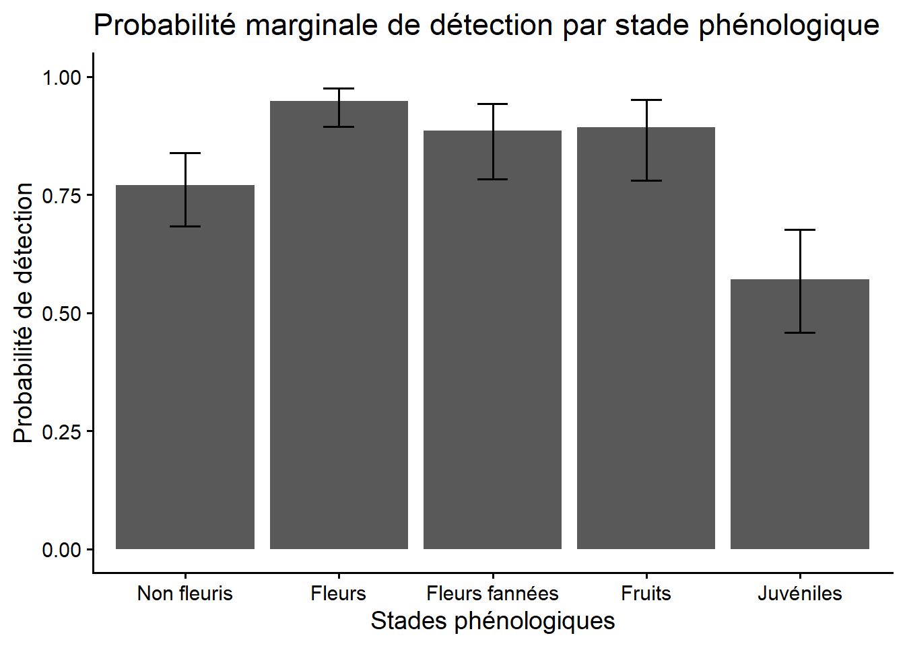
Méthode d’interprétation : Nous cherchons à vérifier s’il existe une relation entre la taille moyenne des individus et le taux de recouvrement végétal des différentes strates. La droite de régression indique la tendance générale, tandis que le R² montre à quel point cette tendance explique réellement la variation de taille, et la p\(_{value}\) indique si cette relation est statistiquement fiable.
Résultats : La strate arborescente montre une relation positive et significative : plus le recouvrement est élevé, plus les individus sont grands (R² = 0.21, p\(_{value}\) < 0.001), ce qui suggère un effet structurant fort. La strate arbustive basse présente aussi une relation positive, mais plus faible (R² = 0.08), indiquant un effet modéré. En revanche, les strates arbustive haute, herbacée et muscinale ne montrent pas de relation claire ou significative : les R² sont très faibles (p\(_{value}\) < 0.05) et les p‑values élevées ou marginales, ce qui signifie que le recouvrement dans ces strates n’explique pas la variation de taille.
Effet de la strate sur la phénologie
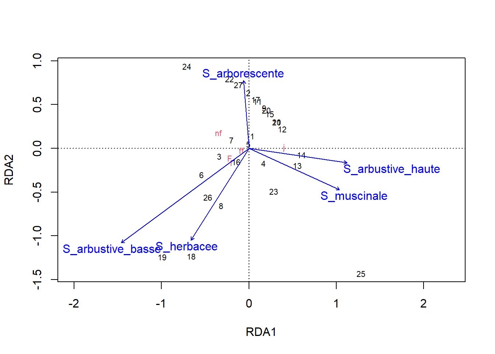
| Df | Variance | F | Pr(>F) | |
|---|---|---|---|---|
| Model | 5 | 0.0340494 | 1.396122 | 0.186 |
| Residual | 21 | 0.1024320 | NA | NA |
| Df | Variance | F | Pr(>F) | |
|---|---|---|---|---|
| S_muscinale | 1 | 0.0091153 | 1.8687602 | 0.120 |
| S_herbacee | 1 | 0.0037290 | 0.7644906 | 0.488 |
| S_arbustive_basse | 1 | 0.0152410 | 3.1246238 | 0.052 |
| S_arbustive_haute | 1 | 0.0038212 | 0.7834002 | 0.487 |
| S_arborescente | 1 | 0.0021430 | 0.4393379 | 0.713 |
| Residual | 21 | 0.1024320 | NA | NA |
| Df | Variance | F | Pr(>F) | |
|---|---|---|---|---|
| RDA1 | 1 | 0.0272690 | 5.5905240 | 0.155 |
| RDA2 | 1 | 0.0051746 | 1.1113818 | 0.928 |
| RDA3 | 1 | 0.0012505 | 0.2807933 | 0.998 |
| RDA4 | 1 | 0.0003341 | 0.0782728 | 1.000 |
| RDA5 | 1 | 0.0000213 | 0.0043591 | NA |
| Residual | 21 | 0.1024320 | NA | NA |
Méthode d’interpretation : La RDA permet d’évaluer si les variables environnementales, ici les différentes strates de recouvrement, expliquent la variation d’un ensemble de variables biologiques, en l’occurrence la phénologie. Le premier tableau teste l’effet global : il indique si l’ensemble des strates, prises ensemble, influence significativement la phénologie. Le second tableau examine l’effet individuel de chaque strate, en testant séparément si chacune contribue de manière significative à expliquer la variation phénologique. Enfin, le troisième tableau teste la significativité des axes RDA, c’est‑à‑dire si les gradients principaux extraits par l’analyse représentent des structures réelles dans les données ou seulement du bruit. Ensemble, ces trois tableaux permettent de savoir si le recouvrement influence la phénologie, quelles strates sont responsables de cet effet, et si les axes produits par la RDA sont interprétables
Résultats : L’effet global du recouvrement sur la phénologie n’est pas significatif (p\(_{value}\) = 0.19), ce qui indique que, dans l’ensemble, les strates végétales n’expliquent pas fortement la variation phénologique entre quadrats. Lorsqu’on examine les strates individuellement, seule la strate arbustive basse présente un effet significatif (p\(_{value}\) = 0.037), suggérant qu’elle influence modestement la distribution des stades phénologiques. Les autres strates (muscinale, herbacée, arbustive haute, arborescente) ne montrent aucun effet détectable. Enfin, aucun des axes RDA n’est significatif (tous p\(_{value}\) > 0.15), ce qui confirme que la structure ordonnée extraite par la RDA est faible et que les gradients phénologiques ne sont pas clairement associés aux gradients de recouvrement. En résumé, le recouvrement végétal n’explique que très faiblement la phénologie, avec un signal limité provenant de la strate arbustive basse.
Nombre de quadrats et d’individus par strates
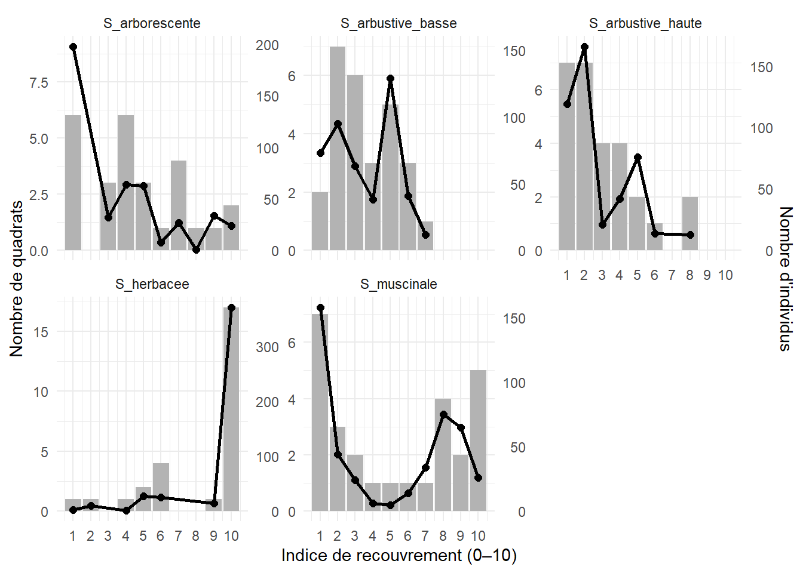
Méthode d’interprétation : Pour chaque strate, nous avons représenté la distribution des quadrats et des individus selon l’indice de recouvrement (0–10). Les barres grises indiquent le nombre de quadrats contenant au moins un individu pour un niveau de recouvrement donné, tandis que la ligne noire (avec points) représente le nombre d’individus, mis à l’échelle pour permettre une comparaison visuelle avec le nombre de quadrats. Cette représentation permet d’évaluer simultanément la fréquence des quadrats et la densité des individus selon le recouvrement de chaque strate, et de détecter les strates ou indices de recouvrement où les individus sont concentrés ou rares.
Résultats : La distribution des quadrats et des individus varie selon les strates. Dans chaque strate, le nombre d’individus suit globalement le nombre de quadrats, ce qui rend difficile d’interpréter l’effet spécifique de la strate sur la densité des individus. Par exemple, dans S_arborescente, la majorité des quadrats et des individus se situent aux faibles indices de recouvrement, tandis que dans S_muscinale, ils se répartissent sur un large spectre de recouvrement avec un maximum aux recouvrements faibles et intermédiaires. Ces tendances suggèrent que la densité d’individus reflète principalement la répartition des quadrats eux-mêmes plutôt que la strate, mais elles permettent néanmoins d’identifier les plages de recouvrement où les plantes sont concentrées ou rares.
Indices de strates végétales
Une méthode pour intégrer le recouvrement serait de mettre en place un indice basé sur les strates et leur hauteur. En fixant une valeur seuil de hauteur pour chaque strate, on peut quantifier et pondérer les hauteurs moyennes par quadrat. Cette méthode reste à développer. Ici un indice de recouvrement des strates ligneuses a été mis en place. On prends la médiane de la taille pour les strates arbustives et la strate arborescente (soit 2m, 5m et 10m) qu’on multiplie par le recouvrement à chaque strate. Puis on divise par la somme des recouvrements des trois strates. On obtiens ainsi une moyenne de la hauteur des ligneux sur le quadrat.
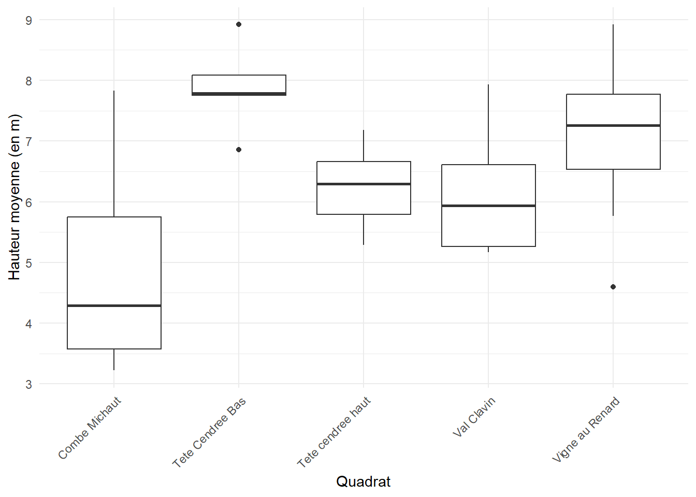
Méthode d’interprétation : Pour chaque site, nous avons représenté la valeur de la hauteur moyenne dans chaque quadrat. Le diagramme en boîte permet d’observer la variabilité de valeurs entre quadrats au sein d’un même site.
Résultats : La hauteur moyenne est plus faible dans le site de Combe Michaut et plus forte dans le site de Tête Cendrée bas
II. Niveau des observateurs
Nous avons distingué trois variables mesurées. Le risque d’erreur correspond à l’estimation que les observateurs font de leur propre fiabilité, basée sur leur auto‑évaluation dans le questionnaire. Le taux d’erreur désigne les cas où l’observateur a bien détecté l’individu, mais a attribué une phénologie incorrecte. Enfin, le taux de détection correspond simplement au fait que l’observateur a vu et signalé l’individu.
II.i Adéquation et fiabilité des observateurs
II.ii Erreur d’attribution phénologique vs non-détection
Nous regardons ici si les personnes n’ayant pas détecté ou on fait une erreur d’attribution de la phénologie font généralement les meme erreurs
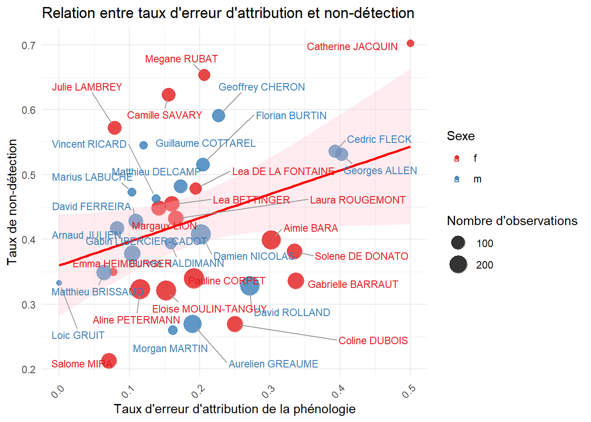
Résultats : Le graphique montre que les observateurs qui ont du mal à attribuer correctement les stades phénologiques ont aussi tendance à manquer davantage d’événements. Cela peut indiquer : une difficulté générale avec l’identification, un effet d’expérience (moins d’habitude → plus d’erreurs), ou des différences individuelles dans la rigueur ou la méthode.
II.iii Autonotation vs erreur d’attribution phénologique
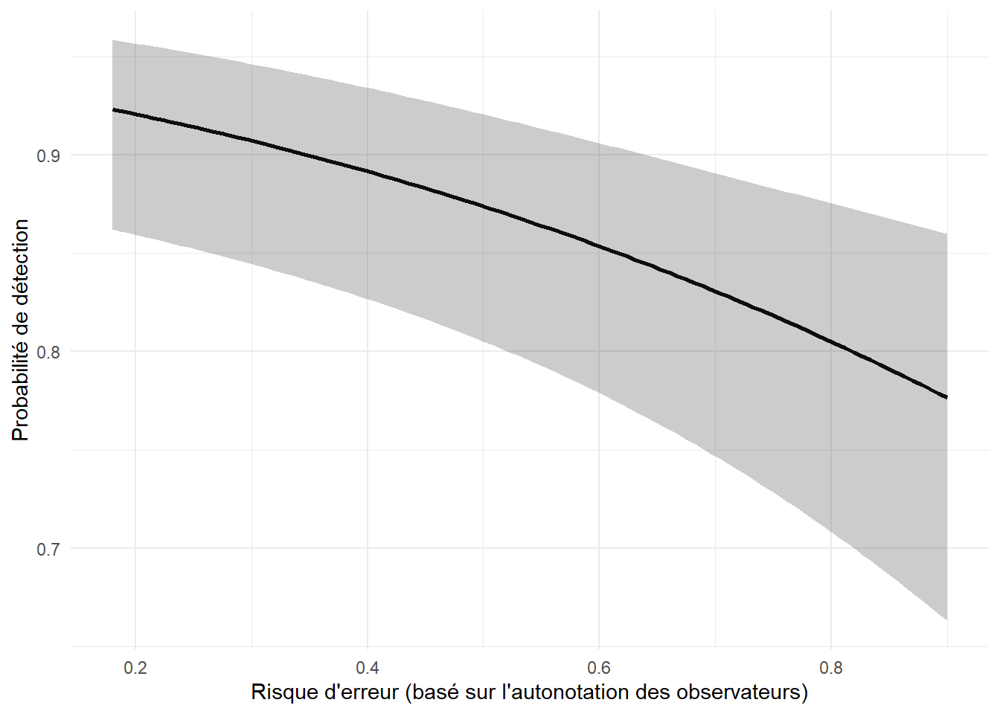
Résultats : Le graphique montre que les observateurs qui s’estiment moins compétents ont tendance à faire plus d’erreur d’attribution des péhonologies.
II.iv Autonotation vs non-détection

Résultats : Le graphique montre que les observateurs qui s’estiment moins compétents ont tendance à moins détecter les individus.
II.v Analyses complémentaires
Visualiser les 3 variables en 3D
Nous pouvons représenter ces trois variables dans un espace en trois dimensions afin de mieux visualiser et distinguer l’effet propre de chacune d’elles. Afin de comprendre quels facteurs influencent le risque d’erreur auto‑évalué, nous avons réalisé plusieurs analyses statistiques. Nous avons d’abord testé la relation monotone entre le taux d’erreur réel et le taux de détection à l’aide d’une corrélation de Spearman. Nous avons ensuite ajusté plusieurs modèles linéaires visant à prédire le risque d’erreur auto‑évalué à partir du taux d’erreur, du taux de non‑détection et du nombre de détections. Enfin, nous avons comparé ces modèles à l’aide du critère AIC pour identifier celui qui explique le mieux la variation observée. Ces tests permettent donc d’évaluer dans quelle mesure l’auto‑évaluation reflète réellement les performances mesurées.
| Model | term | estimate | std.error | statistic | p.value |
|---|---|---|---|---|---|
| Model1 | (Intercept) | 0.7491 | 0.2011 | 3.7247 | 0.0008 |
| Model1 | tx_erreur | 0.5301 | 0.3232 | 1.6402 | 0.1108 |
| Model1 | tx_detect | -0.3254 | 0.2972 | -1.0950 | 0.2817 |
| Model2 | (Intercept) | 0.9420 | 0.1673 | 5.6315 | 0.0000 |
| Model2 | tx_detect | -0.4895 | 0.2869 | -1.7061 | 0.0974 |
| Model3 | (Intercept) | 0.5409 | 0.0657 | 8.2389 | 0.0000 |
| Model3 | tx_erreur | 0.6492 | 0.3052 | 2.1270 | 0.0410 |
| Model3_app | (Intercept) | 0.6551 | 0.0740 | 8.8522 | 0.0000 |
| Model3_app | tx_erreur | 0.7068 | 0.2813 | 2.5132 | 0.0172 |
| Model3_app | nb_detect | -0.0010 | 0.0004 | -2.6639 | 0.0120 |
| Model | AIC | R2 |
|---|---|---|
| Model1 | -11.566 | 0.152 |
| Model2 | -10.741 | 0.081 |
| Model3 | -12.279 | 0.121 |
| Model3_app | -17.289 | 0.280 |
Méthode d’interprétation : Les p\(_{value}\) < 0,05 permettent de savoir si une variable a un effet significatif
Résultats : Les analyses montrent que l’auto‑évaluation du risque d’erreur n’est pas entièrement déconnectée des performances réellement mesurées, mais qu’elle ne s’appuie pas uniformément sur toutes les dimensions objectives de ces performances. En particulier, le taux d’erreur observé lors du test terrain apparaît comme un prédicteur significatif et positif du risque perçu dans les modèles les plus simples. Cela signifie que les personnes qui commettent davantage d’erreurs sur le terrain ont tendance à s’attribuer un risque d’erreur plus élevé, révélant une certaine capacité à se situer par rapport à leurs performances réelles.
Effet du genre
La littérature en psychologie suggère, dans plusieurs contextes d’évaluation, que des différences de perception de compétence peuvent apparaître entre femmes et hommes, certaines études mettant notamment en évidence une tendance plus marquée à la sous‑estimation de soi dans certains groupes. Dans notre travail, il nous semblait donc pertinent d’examiner si un effet lié au genre pouvait également émerger dans notre jeu de données.
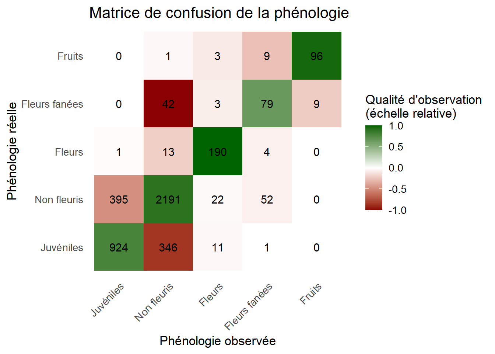

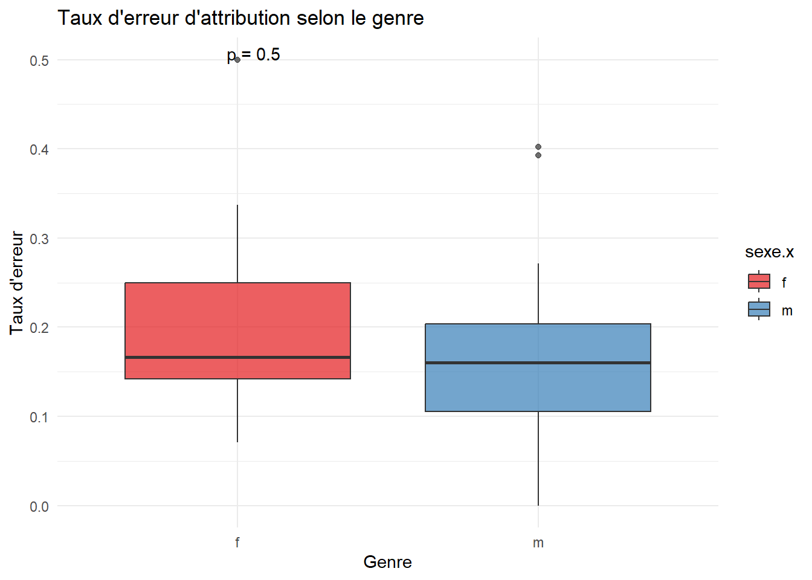
Méthode d’interprétation : Ces graphiques permettent de comparer visuellement si les performances des observateurs diffèrent selon le genre. Le boxplot du risque d’erreur montre si hommes et femmes s’auto‑évaluent différemment en termes de confiance ou de prudence. Celui du taux de détection indique si un genre repère plus souvent les individus que l’autre. Enfin, le boxplot du taux d’erreur d’attribution révèle si l’un des deux groupes se trompe davantage dans l’identification de la phénologie. Les p\(_{value}\) affichées sur les graphiques permettent de savoir si les différences observées sont statistiquement significatives ou si elles relèvent simplement de la variabilité individuelle.
Résultats : Nous n’avons observé aucune différence significative entre les genre, quelle que soit la variable d’erreur considérée. Il n’est donc pas pertinent d’utiliser cette variable.
III. PROBABILITE DE DETECTION
Dans cette partie, nous étudions la probabilité de détection du Sabot‑de‑Vénus.
III.i GLMM
Nous disposons de plusieurs strates, mais nous souhaitons n’utiliser qu’une seule covariable représentant le recouvrement. Pour cela, nous utilisons l’indice de recouvrement végétal montré précédemment, la moyenne de la hauteur des ligneux sur le quadrat.
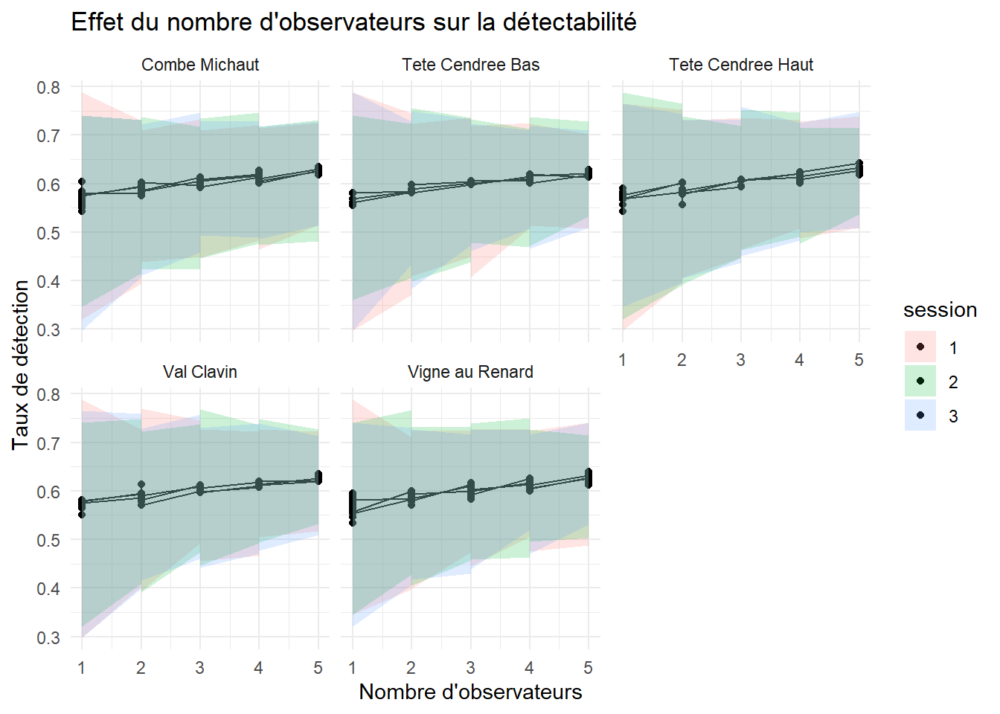
Afin d’éviter la colinéarité entre les stades phénologiques et la taille des individus, nous avons ajusté deux modèles distincts, chacun incluant uniquement l’une de ces deux variables. Ces modèles sont des GLMM binomiaux, dont la variable réponse est la détection (détecté / non détecté).
Les variables explicatives fixes intégrées sont les suivantes :
le site : nous anticipons des différences de détectabilité entre sites en raison de conditions environnementales ou structurelles distinctes ;
la session : la détectabilité pourrait augmenter au fil du temps, en raison d’une meilleure familiarité des observateurs ou d’une phénologie plus avancée ;
l’interaction entre le site et la session : nous supposons que l’évolution de la détectabilité au cours du temps pourrait varier d’un site à l’autre ;
la phénologie observée par les opérateurs : nous nous attendons à une détectabilité plus faible pour les stades juvéniles et à des confusions possibles entre certains stades (par exemple entre “fleurs fanées” et “non fleuri”) ;
l’interaction entre le site et la phénologie : la manière dont la phénologie influence la détection pourrait différer selon les sites ;
les strates végétales : une végétation dense devrait réduire la probabilité de détection ;
le risque d’erreur issu de l’auto‑évaluation des observateurs : nous formulons l’hypothèse que la détectabilité diminue lorsque le risque d’erreur perçu est plus élevé.
Les effets aléatoires inclus dans les modèles reflètent la structure hiérarchique des données :
l’individu, emboîté dans le quadrat (déjà pris en compte dans la structure d’identifiant) ; le quadrat, emboîté dans le site ; l’observateur, afin de tenir compte des variations inter‑individuelles de compétence et de style d’observation.
Modèle site et session
| Effet | ddl | Chi² | p-value |
|---|---|---|---|
| site | 4 | 9.4565 | 5.06e-02 |
| session | 2 | 1.3219 | 5.16e-01 |
| phenologie_verif | 4 | 99.0212 | 1.59e-20 |
| nb_individus_sc | 1 | 23.0639 | 1.57e-06 |
| risque_erreur | 1 | 12.6846 | 3.69e-04 |
| nb_detect_sc | 1 | 2.4335 | 1.19e-01 |
| hauteur_moy_sc | 1 | 0.2498 | 6.17e-01 |
| site:session | 8 | 19.5842 | 1.20e-02 |
# R2 for Mixed Models
Conditional R2: 0.544
Marginal R2: 0.271Méthode d’interprétation : Le tableau de l’effet fixe des variables indique pour chaque variable si elle a un effet significatif sur la détectabilité des ramets, ce qui permet d’identifier les prédicteurs réellement influents dans le modèle. Les valeurs de R² marginal et conditionnel renseignent sur la part de variance expliquée par les seules variables fixes, puis par l’ensemble du modèle incluant les effets aléatoires, indiquant ainsi la contribution des différences entre observateurs et entre quadrats.
Résultats : Les résultats du modèle indiquent que plusieurs variables influencent significativement la probabilité de détection du Sabot‑de‑Vénus. La phénologie présente un effet marqué : certains stades, notamment les stades jeunes ou difficiles à distinguer, réduisent clairement la détectabilité. Le risque d’erreur auto‑évalué par les observateurs a également un effet négatif significatif, suggérant que les personnes se percevant comme moins sûres d’elles détectent effectivement moins bien les individus. L’interaction entre le site et la session est également significative, indiquant que l’évolution de la détectabilité au cours du temps varie d’un site à l’autre, possiblement en lien avec des dynamiques locales de phénologie, de structure de végétation ou d’expérience acquise. Les variables fixes expliquent environ 18 % de la variance totale, tandis que l’inclusion des effets aléatoires (observateur, quadrats et leurs imbrications) porte l’explication à 54 %, ce qui souligne l’importance des effets individuels et spatiaux dans la probabilité de détection. Cela confirme que, au‑delà des caractéristiques mesurées, des différences systématiques entre observateurs et entre quadrats influencent fortement la probabilité de détecter un individu.
Effet du site et de la session
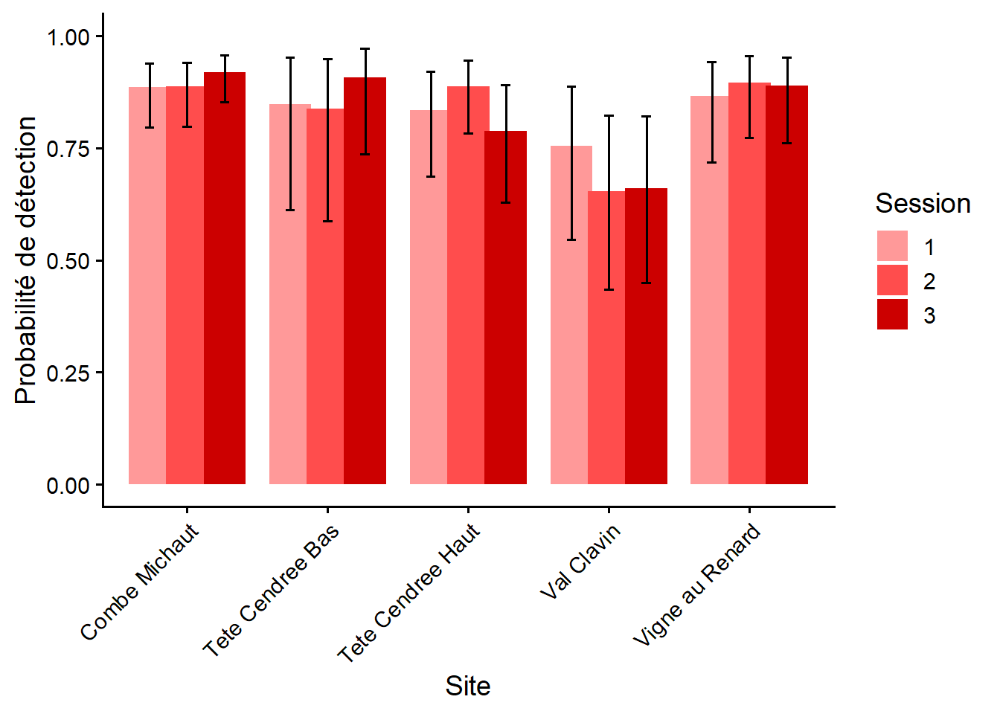
Méthode d’interprétation : Les estimations marginales (EMMEANS) permettent de visualiser comment la probabilité de détection varie selon les combinaisons site × session, en isolant l’effet propre de cette interaction et en fournissant des intervalles de confiance qui facilitent l’interprétation des différences entre groupes.
Résultats : Il n’y a pas de réelle différence de détection entre les sites à part pour Val Clavin qui a une probabilité de détection de 70% au lieu de 85% environ pour les autres. De plus, la probabilité de détection varie de manière non significative en fonction des sessions. Il n’y a pas de réel effet de ces deux variables.
Effet du stade phénologique
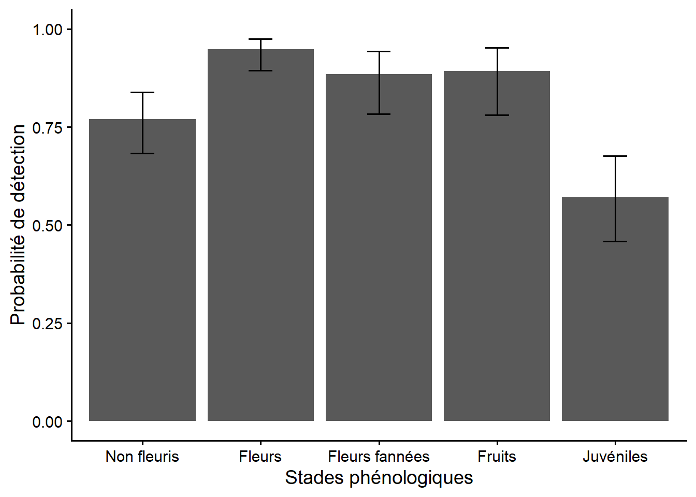
Méthode d’interprétation : L’estimation marginale issue d’EMMEANS pour les stades phénologiques permet d’obtenir, pour chaque stade, la probabilité moyenne de détection en contrôlant pour toutes les autres variables du modèle. Le graphique associé représente ces probabilités sur l’échelle réelle (0‑1), avec un intervalle de confiance à 95 %, ce qui permet d’évaluer visuellement les différences de détectabilité entre stades. Si une barre est plus basse ou si son intervalle de confiance ne chevauche pas celui d’un autre stade, cela indique une différence significative dans la probabilité de détection. Ce type de sortie permet donc d’isoler l’effet propre du stade phénologique sur la détectabilité, indépendamment de la structure spatiale, de l’observateur ou des autres covariables incluses dans le modèle.
Résultats : Les individus en fleurs sont les plus facilement détectés, suivis des stades fleurs fanées et fruits, qui restent bien visibles. Les non‑fleuris sont détectés moins souvent, et les juvéniles présentent de loin la plus faible probabilité de détection. La détectabilité diminue donc nettement pour les stades peu visibles ou de petite taille.
Effet de la densité d’individus dans un quadrat
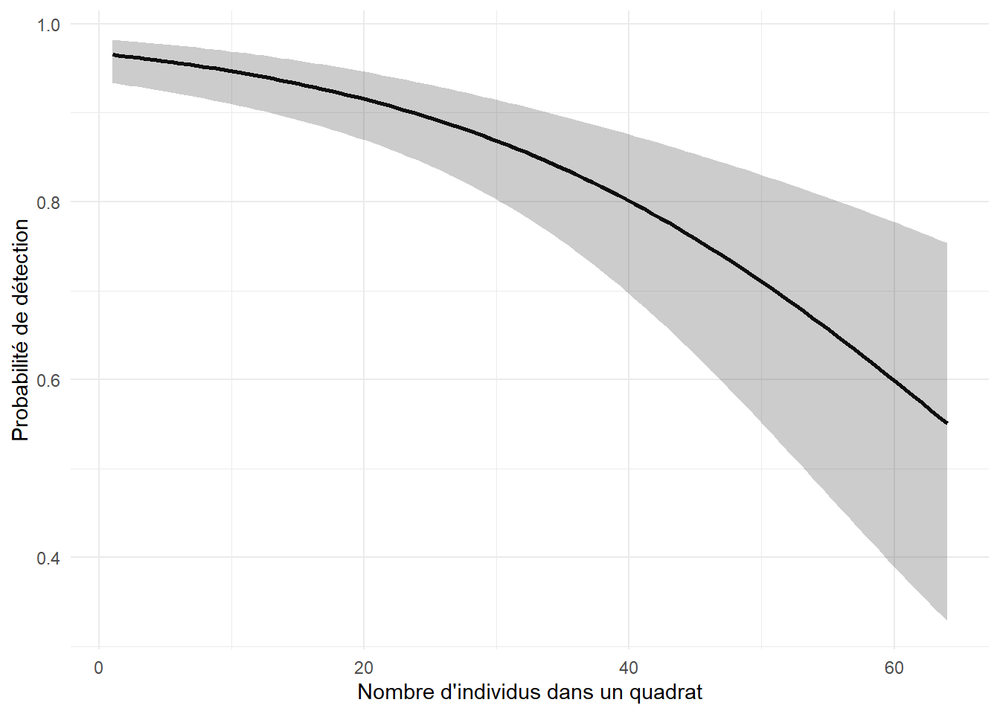
Méthode d’interprétation : Cette sortie permet de visualiser comment la probabilité de détection varie selon le nombre réel d’individus dans un quadrat. La variable étant centrée‑réduite dans le modèle, on la retransforme pour lire la densité sur son échelle d’origine. La courbe montre la tendance moyenne (probabilité de détection) et le ruban représente l’incertitude (IC à 95%). Si la probabilité augmente avec la densité, la détection est facilitée par un plus grand nombre d’individus ; si elle reste stable ou diminue, la densité n’améliore pas ou réduit la détectabilité.
Résultats : Le graphique montre que la probabilité de détection diminue clairement lorsque le nombre d’individus dans un quadrat augmente. À faible densité, la détection est presque parfaite, mais elle se dégrade progressivement avec l’augmentation du nombre d’individus, jusqu’à devenir nettement plus faible dans les quadrats les plus denses. Cette baisse suggère que la présence de nombreux individus complique le repérage précis de chacun, probablement en raison d’un effet de confusion, de saturation visuelle ou d’enchevêtrement de la végétation. L’élargissement de l’intervalle de confiance aux densités élevées indique aussi plus d’incertitude dans ces conditions, ce qui reflète une variabilité importante de la détection lorsque le quadrat est très rempli.
Effet du risque d’erreur (autonotation des observateurs)

Résultats : La probabilité de détection diminue progressivement à mesure que le risque d’erreur auto‑évalué augmente. Les observateurs qui s’estiment peu susceptibles de se tromper détectent mieux les individus, tandis que ceux qui déclarent un risque d’erreur élevé présentent une détectabilité nettement plus faible. La pente continue du graphique indique une relation négative régulière, et l’élargissement de l’intervalle de confiance aux valeurs hautes montre une plus grande variabilité entre observateurs fortement incertains.
Effet du nombre de détections par observateur
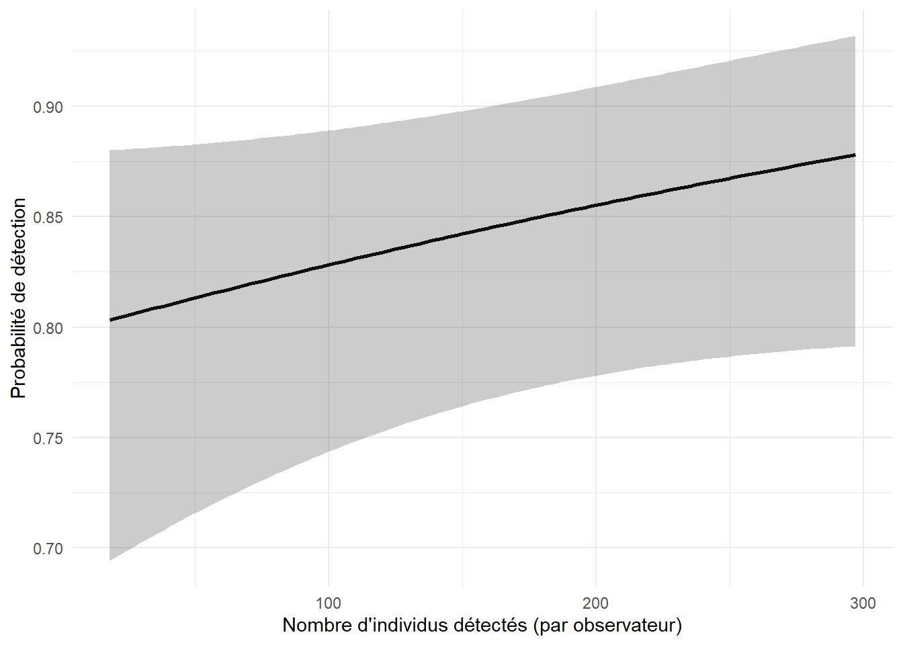
Résultats : Le graphique montre comment la probabilité de détection varie selon le nombre réel d’individus détectés par un observateur. Après transformation inverse de la variable centrée‑réduite, la courbe révèle une tendance nette : plus un observateur a détecté d’individus au total, plus sa probabilité de détection augmente. Cette relation positive traduit un effet d’apprentissage ou d’habituation : les observateurs gagnent en efficacité au fur et à mesure qu’ils détectent davantage d’individus. Le ruban gris indique l’incertitude autour de l’estimation, plus large aux extrêmes où les données sont moins nombreuses, mais la tendance reste clairement ascendante.
Effet de la densité du couvert végétal
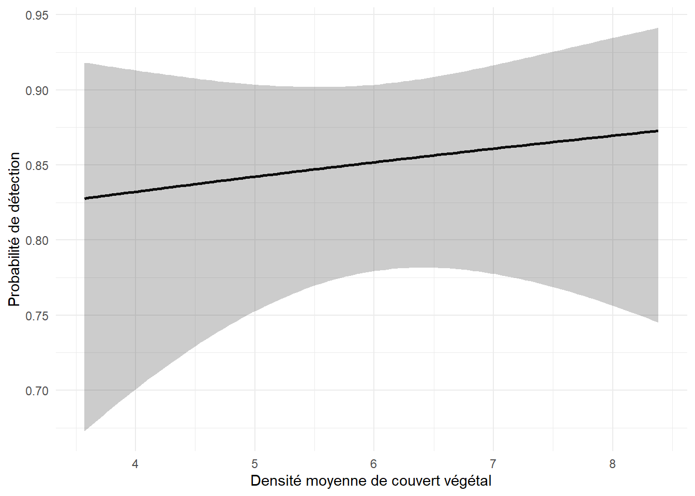
Résultats : La probabilité de détection augmente légèrement lorsque la densité moyenne du couvert végétal augmente. Même si la pente reste faible, la tendance suggère que les individus situés dans des zones à couvert un peu plus dense ne sont pas plus difficiles à détecter, et pourraient même être légèrement plus visibles. L’intervalle de confiance large montre toutefois une forte variabilité, indiquant que cet effet reste modeste et moins bien contraint que d’autres variables du modèle.
III.i Détection de la phénologie
Nous avons construit une matrice de confusion sous forme de heatmap afin d’identifier clairement l’origine des erreurs de classification de la phénologie et de visualiser leur fréquence. Cette représentation met en évidence, en un seul coup d’œil, quels stades sont correctement reconnus et lesquels sont le plus souvent confondus, tout en indiquant le nombre exact d’observations dans chaque cas.

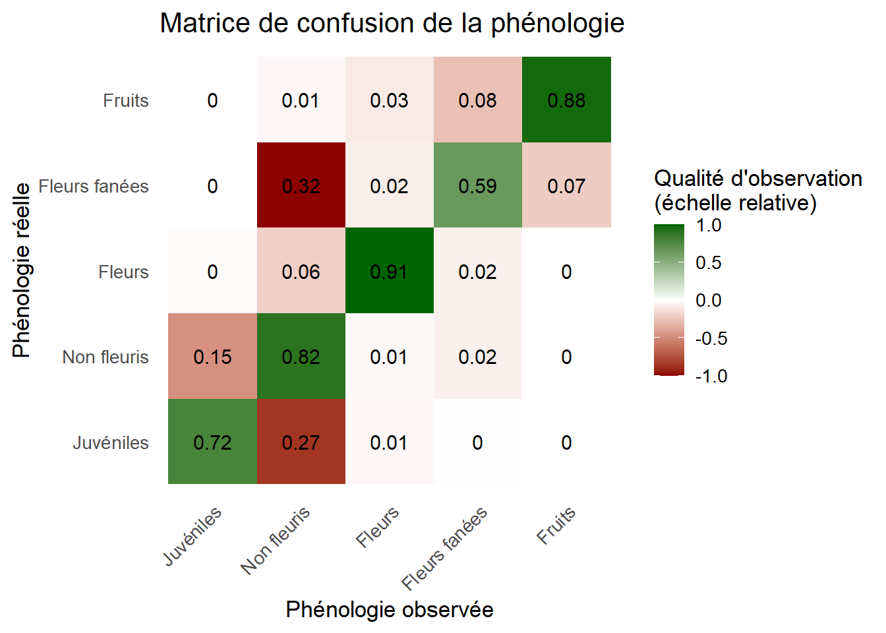
Méthode d’interprétation : La heat map compare la phénologie réellement observée sur le terrain (axe vertical) avec celle déclarée par les observateurs (axe horizontal). Chaque case montre combien d’individus ont été classés dans chaque catégorie, et la couleur indique la qualité de l’observation : vert si la phénologie a été correctement identifiée, rouge si elle a été confondue. Plus la couleur est foncée, plus l’accord ou l’erreur est marqué. L’interprétation consiste donc à vérifier que les diagonales sont vertes (bonnes identifications) et à examiner les zones rouges pour repérer les stades les plus souvent confondus.
Résultats : Les stades Fleurs et Fruits sont bien identifiés, avec une forte proportion de détections correctes (cases vertes). En revanche, les stades Juvéniles et Non fleuris génèrent beaucoup d’erreurs : les juvéniles sont très souvent confondus avec les non fleuris, et inversement. Le stade Fleurs fanées est également sujet à confusion, particulièrement vers le stade Non fleuris. Globalement, seuls les stades florifères sont bien reconnus, tandis que les stades précoces et intermédiaires sont régulièrement mal identifiés, ce qui met en évidence une forte difficulté d’identification hors période de floraison.
III.i Détection en fonction du nombre d’observateurs
Nous estimons l’effet du nombre d’observateurs sur la détectabilité par bootstrap : pour chaque valeur de kkk (1 à 5), nous échantillonnons aléatoirement kkk observateurs sans remise, calculons pour chaque individu s’il a été détecté par au moins l’un d’eux, puis le taux moyen de détection du quadrat (répété B=100B=100B=100 fois). Nous obtenons ainsi, par site et par session, une courbe du taux de détection moyen avec un intervalle d’incertitude (2,5–97,5 %). En complément, nous simulons un scénario “débutants” en ne retenant que les deux observateurs au risque d’erreur le plus élevé (proxy d’un faible niveau d’expérience) et comparons leurs taux de détection par site et par session. Cette approche permet d’isoler l’apport marginal d’observateurs supplémentaires et d’évaluer l’impact potentiel d’une équipe peu expérimentée sur la détectabilité.

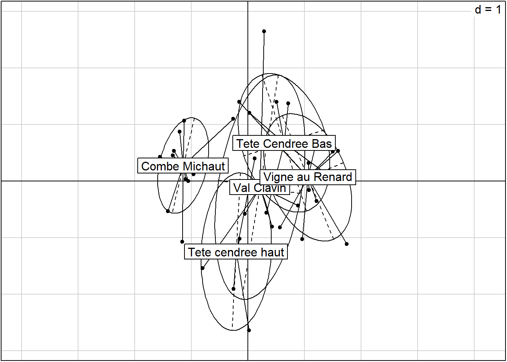
Résultats : Effet du nombre d’observateurs : Dans tous les sites et sessions, le taux de détection augmente légèrement avec le nombre d’observateurs : la pente est positive mais modeste, et l’incertitude (rubans) reste largement chevauchante, surtout aux extrêmes, ce qui suggère des rendements décroissants au‑delà de 3–4 personnes. Les niveaux de départ diffèrent selon les sites (effet de contexte) et les sessions, mais la tendance générale est cohérente : ajouter des observateurs améliore la détectabilité de quelques points, sans saut majeur.
Deux observateurs débutants : Le scénario “débutants” montre des taux de détection plus faibles et plus variables, surtout en début de saison et dans certains sites. On observe toutefois une amélioration au fil des sessions (effet d’apprentissage/familiarisation), avec des performances parfois proches d’un plafond dans les contextes les plus favorables. Globalement, équiper une équipe uniquement de débutants pénalise la détectabilité, de façon hétérogène selon les sites, d’où l’intérêt de panacher avec au moins un observateur expérimenté et de planifier plusieurs passages.
IV. PROBABILITE DE TRANSITION
Dans cette partie, nous étudions la probabilité de transition du Sabot‑de‑Vénus.
IV.i CMR
Analyse des transitions phénologiques avec et sans MARK
Nous avons estimé les probabilités de transition entre stades phénologiques en utilisant deux approches complémentaires. La première repose sur un calcul empirique simple, basé sur les fréquences observées de passage d’un stade au suivant. La seconde utilise RMark pour modéliser explicitement les transitions dans un cadre de type multistrate, où chaque strate correspond à un stade phénologique. Dans ce modèle, la survie a été fixée à 1, car sa valeur observée (≈ 0,98) est très élevée et n’apporte ni information écologique pertinente ni avantage statistique dans le contexte de notre étude. Cette approche permet de tenir compte de l’incertitude et de la structure des données tout en garantissant des probabilités de transition biologiquement cohérentes.
Méthode d’interprétation : Les valeurs de la matrice de transition représentent, pour chaque stade phénologique, la probabilité qu’un individu reste dans ce même stade ou passe à un autre lors de la session suivante. Chaque ligne correspond au stade de départ, et la somme des probabilités de chaque ligne est égale à 1 après ajout de la probabilité de rester dans le même état. Une valeur élevée indique qu’une transition est fréquente dans les données, alors qu’une valeur proche de zéro signale une transition rare ou biologiquement improbable. Le fait d’imposer une probabilité nulle pour « Fruit → Fruit » reflète simplement qu’aucune stabilité de ce stade n’a été observée dans les données. Ce type de matrice permet donc de visualiser facilement les trajectoires phénologiques dominantes et les stades les plus dynamiques.
Transitions session 1 → 2 → 3
Sans Mark
Avec Mark
Résultats : Les probabilités de transition obtenues par calcul direct et celles issues de la modélisation sous RMARK sont globalement cohérentes. Bien qu’il soit difficile de déterminer laquelle des deux approches est la plus robuste, l’utilisation de MARK reste en principe mieux adaptée pour modéliser explicitement les processus de transition et d’incertitude.
Dans notre cas, les deux méthodes montrent qu’il est particulièrement pertinent de se concentrer sur la transition entre la session 1 et la session 2 pour étudier le passage vers le stade fleuri, tandis que la session 2 vers la session 3 est plus informative pour analyser le passage du stade fleuri vers les stades suivants. Ces transitions sont en Annexe V.iv. ``
Ces résultats suggèrent que la floraison s’étend principalement sur l’intervalle d’environ dix jours entre les sessions 1 et 2, période durant laquelle de nombreux individus juvéniles évoluent vers le stade non fleuri. À l’inverse, entre les sessions 2 et 3, qui sont espacées d’environ quarante jours au mois de juin, les fleurs ont davantage tendance soit à faner, soit à passer au stade fruit. Ces dynamiques reflètent donc clairement une progression phénologique rapide en mai, suivie d’une transition marquée vers la sénescence ou la fructification en juin.
IV.ii CRDMS
Capture-Recapture Data for Multi-State models
Dans les modèles multistrates de capture-recapture, le format CRDMS est utilisé comme structure interne de données car il permet de représenter de manière cohérente l’histoire complète de chaque individu au cours du temps, en intégrant à la fois les états occupés (stades phénologiques) et les observations associées. Son principe repose sur l’encodage des trajectoires individuelles sous une forme standardisée qui décrit les transitions possibles entre stades phénologiques, ainsi que les paramètres à estimer (probabilités de transition, de détection et éventuellement de survie).
Préparation tableau
Ajouter explication d’homogénéisation à 5 observateurs. Note : pas tete cendrée bas car éliminé dans le processus d’homogénéisation à 5 observateurs par quadrat et session minimum.
Modèle 1
| param | estimate | IC95 | OR_IC | p |
|---|---|---|---|---|
| p:(Intercept) | 0.960 | [0.834 – 1.087] | 2.61 [2.30 – 2.96] | 0.000 |
| p:siteTete Cendree Haut | -0.749 | [-0.877 – -0.622] | 0.47 [0.42 – 0.54] | 0.000 |
| p:siteVigne au Renard | 0.864 | [0.647 – 1.082] | 2.37 [1.91 – 2.95] | 0.000 |
| Psi:(Intercept) | -1.211 | [-1.519 – -0.903] | 0.30 [0.22 – 0.41] | 0.000 |
| Psi:ctime2 | -1.265 | [-1.680 – -0.850] | 0.28 [0.19 – 0.43] | 0.000 |
| Psi:siteTete Cendree Haut | -1.416 | [-1.931 – -0.902] | 0.24 [0.15 – 0.41] | 0.000 |
| Psi:siteVal Clavin | 1.311 | [0.713 – 1.909] | 3.71 [2.04 – 6.75] | 0.000 |
| Psi:siteVigne au Renard | -1.464 | [-2.136 – -0.792] | 0.23 [0.12 – 0.45] | 0.000 |
| p:session3 | -0.204 | [-0.345 – -0.062] | 0.82 [0.71 – 0.94] | 0.005 |
| p:siteVal Clavin | -0.193 | [-0.379 – -0.007] | 0.82 [0.68 – 0.99] | 0.042 |
Méthode d’interprétation : Ce tableau présente les coefficients du modèle CRDMS pour les paramètres de détection (p) et de transition entre états phénologiques (Ψ). Chaque ligne correspond à un effet estimé par le modèle, accompagné de son estimateur (estimate) et de son intervalle de confiance à 95 % (IC95). L’interprétation repose principalement sur le signe du coefficient et l’intervalle de confiance :
- Si l’IC95 % n’inclut pas 0, l’effet est significatif : il influence réellement la détection (p) ou les transitions (Ψ).
- Un coefficient positif indique une augmentation de la probabilité (meilleure détection ou transition plus probable).
- Un coefficient négatif indique une diminution de la probabilité (détection plus faible, transition moins probable).
Les paramètres comme p:(Intercept) ou Ψ:(Intercept) représentent les probabilités de base (valeurs de référence), tandis que les autres lignes expriment l’effet additionnel d’un site, d’une session, ou d’une variable temporelle (ctime) par rapport à cette référence.
ATTENTION : Ce tableau contient des coefficients du modèle sur l’échelle logit, pas des PROBABILITES !
Résultats : Les résultats montrent des effets très clairs à la fois sur la détection et sur les transitions phénologiques. Pour la détection (p), plusieurs sites influencent fortement la probabilité d’observer un individu : Tête Cendrée Haut présente une détection significativement plus faible, alors que Vigne au Renard montre une détection plus élevée. La session 3, quant à elle, réduit légèrement la détectabilité, ce qui correspond logiquement à une période où les individus sont souvent plus difficiles à distinguer (fruits, fleurs fanées, végétation plus dense).
Pour les transitions (Ψ), la variable temporelle ctime2 a un effet fortement négatif, indiquant une propension moindre à transiter vers l’état suivant entre les sessions correspondantes. Certains sites se distinguent également : Val Clavin augmente significativement les probabilités de transition, alors que Tête Cendrée Haut et Vigne au Renard montrent des transitions nettement plus faibles.
Globalement, ces résultats confirment que le site joue un rôle majeur dans les dynamiques phénologiques et de détection, et que les transitions phénologiques ne sont pas homogènes d’un site à l’autre, reflétant probablement des différences micro‑habitat ou phénologiques locales. Ils valident également que la session 3 correspond à une période où la détection devient plus complexe.
Probabilités de détection en fonction des sites et des sessions
| Site | Session 1 | Session 2 | Session 3 |
|---|---|---|---|
| Combe Michaut | 0.723 [0.697–0.748] | 0.717 [0.692–0.740] | 0.681 [0.656–0.705] |
| Tete Cendree Haut | 0.553 [0.520–0.585] | 0.545 [0.515–0.574] | 0.502 [0.473–0.531] |
| Val Clavin | 0.683 [0.641–0.722] | 0.676 [0.635–0.715] | 0.637 [0.596–0.677] |
| ne au Renard | 0.861 [0.833–0.885] | 0.857 [0.829–0.882] | 0.835 [0.803–0.862] |
Méthode d’interprétation: Ce tableau présente les probabilités de détection (p) estimées par le modèle CRDMS pour chaque site et chaque session, ainsi que leur intervalle de confiance à 95 % (IC95 %). Les valeurs sont exprimées sur l’échelle réelle (de 0 à 1), ce qui permet une lecture directe : plus la probabilité est élevée, plus il est facile de détecter les individus présents dans un quadrat. L’intervalle de confiance renseigne sur la précision de l’estimation : un intervalle étroit indique une estimation fiable, tandis qu’un intervalle plus large traduit une plus grande incertitude. La comparaison entre sites permet d’identifier les zones où la détection est naturellement plus facile ou plus difficile, tandis que la comparaison entre sessions permet d’apprécier l’évolution de la détectabilité au cours de la saison.
Résultats: Les probabilités de détection varient fortement d’un site à l’autre. Vigne au Renard présente systématiquement les valeurs les plus élevées (≈ 0.86 en S1, ≈ 0.84 en S3), indiquant une détectabilité très favorable et stable au cours de la saison. À l’inverse, Tête Cendrée Haut affiche les probabilités les plus faibles (≈ 0.55 en S1, ≈ 0.50 en S3), ce qui traduit une difficulté structurelle de détection, probablement liée à une végétation plus dense ou à une phénologie plus tardive. Combe Michaut et Val Clavin se situent dans une zone intermédiaire, avec des probabilités proches de 0.70 et une légère diminution en session 3. Cette baisse progressive entre S1, S2 et S3 est présente dans tous les sites, suggérant que la fin de saison (fruits, fanes, végétation haute) réduit globalement la visibilité des individus. Globalement, ces résultats confirment un effet combiné du site et de la session sur la détectabilité, ce qui souligne l’importance d’intégrer la variabilité spatiale et temporelle dans l’interprétation des données et dans la planification du protocole de suivi.
Transitions phénologiques à Combe Michaut
Transitions phénologiques à Tete Cendree Haut
Transitions phénologiques à Val Clavin
Transitions phénologiques à Vigne au Renard
Résultats : Les probabilités de transition montrent des trajectoires phénologiques très contrastées entre les sites, révélant l’influence forte des conditions locales sur la progression des individus. Tête Cendrée Haut présente les dynamiques les plus contraintes : la majorité des individus restent bloqués dans les stades précoces, notamment non fleuri (0.82) et juvénile (0.78), tandis que les transitions vers les stades reproducteurs sont extrêmement faibles. Ce schéma traduit une phénologie nettement retardée, probablement liée à un habitat plus fermé ou plus froid, empêchant la progression vers la floraison. À l’opposé, Val Clavin montre les transitions les plus rapides et les plus franches vers les stades avancés : les probabilités vers fleur fanée (0.48) et surtout vers fruit (0.52) attestent d’une phénologie avancée et d’une forte réussite reproductive, suggérant des conditions écologiques particulièrement favorables. Les sites Vigne au Renard et Combe Michaut occupent des positions intermédiaires mais distinctes. Vigne au Renard présente une progression régulière vers la floraison (0.88) puis vers la fructification (0.06), avec une très forte rétention dans les stades avancés comme “fleurs fanées” (0.94), témoignant d’un développement reproducteur abouti mais plus étalé dans le temps. Combe Michaut, quant à lui, montre une dynamique intermédiaire mais plus diffuse, où les transitions existent mais restent moins marquées que dans les sites les plus rapides : la progression vers les fleurs (0.63) et vers les fruits (0.23) est modérée, reflétant une phénologie ni bloquée ni particulièrement accélérée.
En synthèse, ces quatre sites dessinent un gradient phénologique clair : Tête Cendrée Haut → Combe Michaut → Vigne au Renard → Val Clavin, du plus retardé au plus avancé. Ces contrastes reflètent probablement des différences de luminosité, structure de végétation, et conditions microclimatiques, qui influencent directement la capacité des individus à progresser vers la floraison et la fructification.
Conclusion
Avant toute conclusion, il est essentiel que les gestionnaires adaptent le protocole de suivi à la question biologique réellement posée. Compte tenu du temps limité et des moyens humains et financiers restreints, il est impératif de déterminer en amont quels stades phénologiques ou quels paramètres écologiques doivent être suivis en priorité. Cette clarification préalable permet d’ajuster efficacement le protocole, d’optimiser l’effort de terrain et de concentrer les ressources sur les observations les plus pertinentes.
1. Une phénologie très structurée et prévisible
Les analyses montrent une progression nette et cohérente des stades phénologiques au cours des trois sessions.
- S1 est dominée par les stades juvéniles et non fleuris.
- S2 correspond au pic de floraison, avec une augmentation marquée des individus fleuris.
- S3 voit la transition vers les fleurs fanées et les fruits.
Cette structuration phénologique confirme que trois passages sont nécessaires pour couvrir l’ensemble du cycle du Sabot de Vénus et éviter les biais d’interprétation associés à l’observation d’un seul stade. Toutefois, lorsque la question biologique porte spécifiquement sur un stade donné, il est possible d’adapter le calendrier. Pour étudier la floraison, il est recommandé de commencer le suivi dès le mois de mai, voire légèrement avant, car nos résultats montrent que des individus étaient déjà en fleur lors de la première session. À l’inverse, pour cibler les stades fleurs fanées ou fructification, un début de suivi en juin est plus approprié. Dans ces situations ciblées, il reste indispensable de prévoir au minimum deux sessions, permettant d’observer une transition phénologique et d’estimer des paramètres dynamiques entre deux temps d’observation.
2. Une croissance régulière et significative des individus
Les modèles mixtes montrent une augmentation significative de la taille entre S1, S2 et S3, indépendamment du site. Les stades floraux et post‑floraux (fleur, fleurs fanées, fruit) présentent systématiquement les tailles les plus élevées, tandis que les stades juvéniles et non fleuris restent nettement plus petits.
Ces résultats confirment que :
- la taille est un indicateur robuste du stade de développement,
- les mesures répétées sur un même individu nécessitent impérativement de corriger l’autocorrélation (effet individu/quadrat/site),
- la croissance est suffisamment marquée pour être utilisée comme variable de suivi écologique.
A noter également que pour un gain de temps, et par rapport au erreurs les plus récurrente dans ce protocole de regrouper les phénologies comme ceci :
⟶ Reproduction (Fruits et fleurs) + Végétatifs
3. Une détectabilité variable selon les sessions, les stades et les observateurs
Les données issues des observateurs montrent :
- une détectabilité plus faible en S1 (stades précoces, individus petits, végétation dense),
- une meilleure détection en S2, lorsque les fleurs sont visibles,
- une détection plus hétérogène en S3, liée à la transition vers les fruits et à la variabilité inter‑observateurs.
Les analyses confirment que :
- la détectabilité dépend fortement du stade phénologique,
- les différences entre observateurs sont réelles et doivent être intégrées dans le protocole (formation, calibration, double prospection),
- les quadrats doivent être prospectés avec un temps standardisé pour limiter les biais.
Les modèles montrent qu’un binôme d’observateurs est suffisant pour obtenir une probabilité de détection satisfaisante, à condition qu’au moins l’un des deux soit un botaniste expérimenté. L’ajout d’observateurs supplémentaires améliore certes la détectabilité, mais de manière marginale dans notre cas, probablement parce que l’espèce reste relativement facile à repérer pour les novices comme pour les experts. Ainsi, au regard des ressources disponibles, un binôme comprenant un expert apparaît comme le compromis optimal entre efficacité du suivi et coût humain.
4. Variabilité spatiale modérée mais réelle
Les contrastes entre sites montrent des différences de taille moyennes, mais globalement limitées. Quelques sites (Vigne au Renard, Val Clavin) présentent des individus plus grands, ce qui pourrait refléter :
des conditions écologiques plus favorables (lumière, structure forestière), ou des dynamiques locales de population.
Cette variabilité justifie :
- un échantillonnage stratifié,
- la prise en compte des strates végétales dans les analyses futures.
Recommandations opérationnelles pour la gestion et le suivi :
- Maintenir trois sessions annuelles (si nécéssaires), car chacune apporte une information complémentaire indispensable.
- Standardiser la formation des observateurs pour réduire les écarts de détectabilité.
- Conserver un échantillonnage stratifié intégrant les strates végétales, car elles influencent la visibilité et potentiellement la dynamique de l’espèce.
- Inclure systématiquement les effets individu/quadrat/site dans les modèles pour éviter les biais liés aux mesures répétées.
- Prioriser la gestion des milieux semi‑ouverts, confirmée comme condition favorable à la croissance et à la détection des individus.
V. Annexes
V.i RDA
L’analyse factorielle discriminante (AFD) est une méthode statistique qui permet de déterminer si des groupes prédéfinis peuvent être différenciés à partir de variables explicatives. Elle cherche à identifier les combinaisons de variables qui séparent le mieux ces groupes.
Dans ce travail, l’AFD est utilisée pour tester si les sites étudiés peuvent être distingués en fonction de la structure de la végétation, décrite par les recouvrements des différentes strates (muscinale, herbacée, arbustive et arborescente). L’objectif est donc de vérifier si chaque site présente une signature de recouvrement particulière et d’identifier quelles strates contribuent le plus à cette différenciation.
Cette méthode suppose une variable réponse continue et des relations linéaires
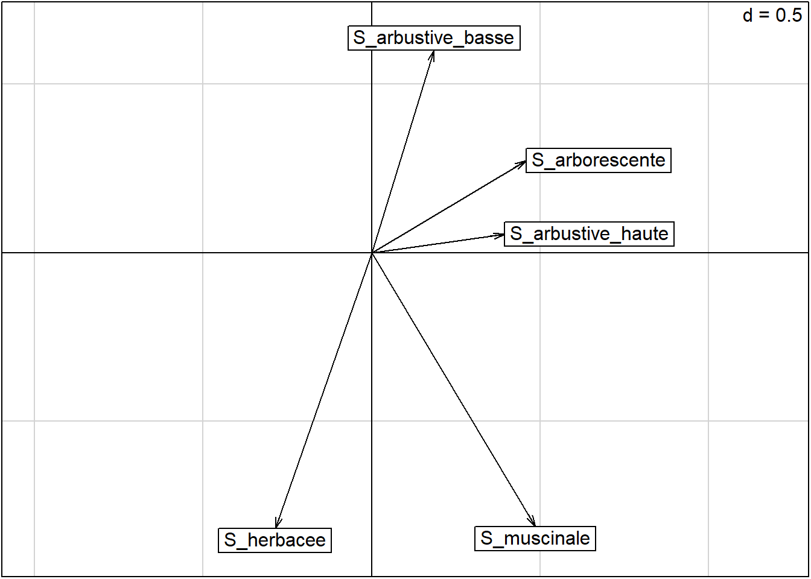

| strate | DS1 | DS2 | DS3 |
|---|---|---|---|
| S_muscinale | 0.486 | -0.813 | 0.419 |
| S_herbacee | -0.286 | -0.819 | 0.329 |
| S_arbustive_basse | 0.186 | 0.601 | 0.927 |
| S_arbustive_haute | 0.395 | 0.055 | -0.050 |
| S_arborescente | 0.458 | 0.273 | 0.379 |
| strate | DS1 | DS2 | DS3 |
|---|---|---|---|
| Combe Michaut | -1.142 | 0.277 | -0.025 |
| Tete Cendree Bas | 0.641 | 0.678 | -0.685 |
| Tete cendree haut | -0.204 | -1.245 | -0.412 |
| Val Clavin | 0.215 | -0.103 | 1.049 |
| Vigne au Renard | 1.060 | 0.068 | -0.004 |
Méthode d’interprétation : Les résultats de l’analyse factorielle discriminante (AFD) permettent de visualiser et d’expliquer les différences de composition végétale entre les sites étudiés. Le premier graphique montre la contribution des différentes strates de végétation aux axes discriminants : la longueur et la direction des flèches indiquent quelles strates participent le plus à la séparation des sites. Le second graphique représente la projection des individus regroupés par site : une bonne séparation entre les groupes traduit des différences nettes de recouvrement des strates entre les sites.Le tableau des coefficients standardisés sur les trois premières fonctions discriminantes (DS1, DS2, DS3) permet de quantifier l’importance relative de chaque strate dans la discrimination des sites.
Résultats : Les strates muscinale et arbustive basse ont les coefficients les plus élevés sur les axes principaux (DS1 et DS2). Les autres strates contribuent moins à la séparation. Sur le premier axe (DS1), Combe Michaut est la plus positive et Vigne au Renard la plus négative, indiquant que ces deux sites sont les plus contrastés en termes de recouvrement des strates discriminantes, notamment muscinale et arbustive basse. Les autres sites se distinguent principalement sur le deuxième axe (DS2), avec Val Clavin très positive et Tête Cendrée haut négative. Les strates muscinale et arbustive basse sont les variables les plus informatives pour expliquer les différences de composition végétale entre les sites.
V.ii ACP strates végétales
'data.frame': 7482 obs. of 5 variables:
$ S_muscinale : num 1 1 1 1 1 1 1 1 1 1 ...
$ S_herbacee : num 10 10 10 10 10 10 10 10 10 10 ...
$ S_arbustive_basse: num 5 5 5 5 5 5 5 5 5 5 ...
$ S_arbustive_haute: num 2 2 2 2 2 2 2 2 2 2 ...
$ S_arborescente : num 1 1 1 1 1 1 1 1 1 1 ...[1] 42.04 27.04 16.69 8.00 6.23[1] 42.04 69.08 85.77 93.77 100.00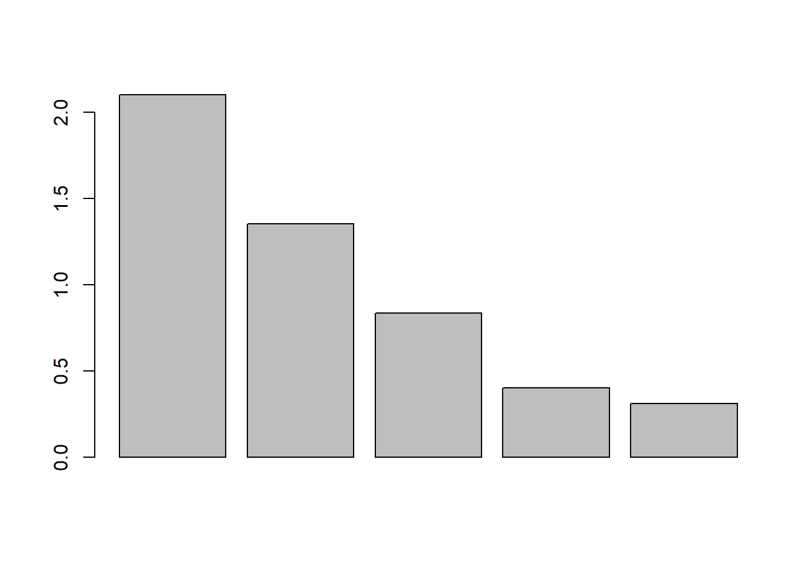
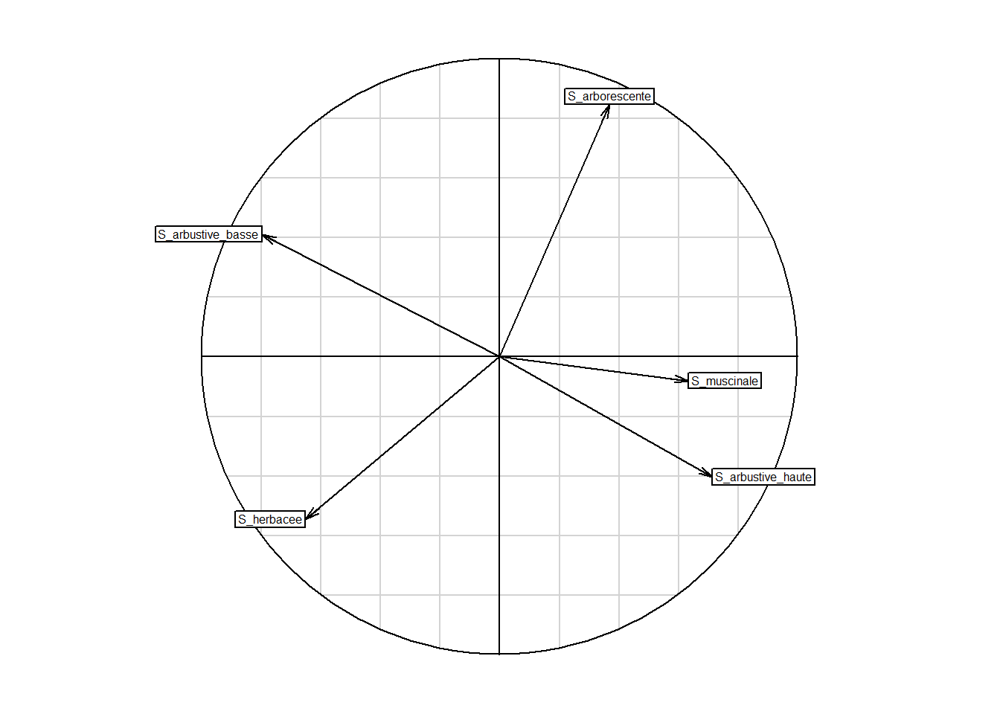
V.iii GLMM modèle Taille
Generalized linear mixed model fit by maximum likelihood (Laplace
Approximation) [glmerMod]
Family: binomial ( logit )
Formula:
detection ~ site + session + site:session + taille_sc + nb_individus_sc +
risque_erreur + S_herbacee + S_arbustive_basse + S_arbustive_haute +
S_arborescente + (1 | observateur) + (1 | site:quadrat:marquage) +
(1 | site:quadrat)
Data: tab_complet
Control: glmerControl(optimizer = "bobyqa", optCtrl = list(maxfun = 2e+05))
AIC BIC logLik -2*log(L) df.resid
6520.0 6689.9 -3235.0 6470.0 6594
Scaled residuals:
Min 1Q Median 3Q Max
-6.9211 -0.5339 0.2495 0.5248 3.7090
Random effects:
Groups Name Variance Std.Dev.
site:quadrat:marquage (Intercept) 1.4644 1.2101
observateur (Intercept) 0.2564 0.5064
site:quadrat (Intercept) 0.3505 0.5920
Number of obs: 6619, groups:
site:quadrat:marquage, 448; observateur, 35; site:quadrat, 25
Fixed effects:
Estimate Std. Error z value Pr(>|z|)
(Intercept) 3.16722 1.24402 2.546 0.01090 *
siteTete Cendree Bas -0.64734 0.99161 -0.653 0.51388
siteTete Cendree Haut -0.59194 0.56530 -1.047 0.29504
siteVal Clavin -0.68857 0.71835 -0.959 0.33779
siteVigne au Renard -0.60028 0.85670 -0.701 0.48350
session2 0.45297 0.21555 2.102 0.03560 *
session3 0.85531 0.20343 4.205 2.62e-05 ***
taille_sc 0.64356 0.05887 10.931 < 2e-16 ***
nb_individus_sc -0.94948 0.20628 -4.603 4.17e-06 ***
risque_erreur -2.04733 0.47324 -4.326 1.52e-05 ***
S_herbacee -0.12589 0.12214 -1.031 0.30269
S_arbustive_basse 0.05112 0.15439 0.331 0.74058
S_arbustive_haute 0.02180 0.12370 0.176 0.86008
S_arborescente 0.03104 0.09909 0.313 0.75408
siteTete Cendree Bas:session2 -0.46708 0.41823 -1.117 0.26408
siteTete Cendree Haut:session2 0.23174 0.35287 0.657 0.51135
siteVal Clavin:session2 -0.38152 0.33716 -1.132 0.25781
siteVigne au Renard:session2 0.02892 0.42074 0.069 0.94519
siteTete Cendree Bas:session3 -0.15290 0.38055 -0.402 0.68784
siteTete Cendree Haut:session3 -1.00031 0.32351 -3.092 0.00199 **
siteVal Clavin:session3 -1.07743 0.35837 -3.006 0.00264 **
siteVigne au Renard:session3 -0.55928 0.38632 -1.448 0.14770
---
Signif. codes: 0 '***' 0.001 '**' 0.01 '*' 0.05 '.' 0.1 ' ' 1Analysis of Deviance Table (Type III Wald chisquare tests)
Response: detection
Chisq Df Pr(>Chisq)
(Intercept) 6.4819 1 0.0108981 *
site 1.6136 4 0.8063540
session 17.7386 2 0.0001406 ***
taille_sc 119.4872 1 < 2.2e-16 ***
nb_individus_sc 21.1872 1 4.165e-06 ***
risque_erreur 18.7156 1 1.517e-05 ***
S_herbacee 1.0623 1 0.3026893
S_arbustive_basse 0.1096 1 0.7405808
S_arbustive_haute 0.0311 1 0.8600752
S_arborescente 0.0981 1 0.7540752
site:session 23.2359 8 0.0030743 **
---
Signif. codes: 0 '***' 0.001 '**' 0.01 '*' 0.05 '.' 0.1 ' ' 1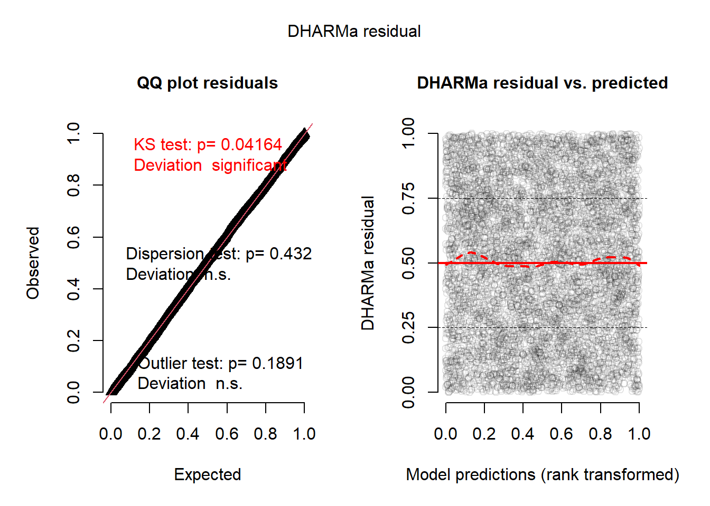
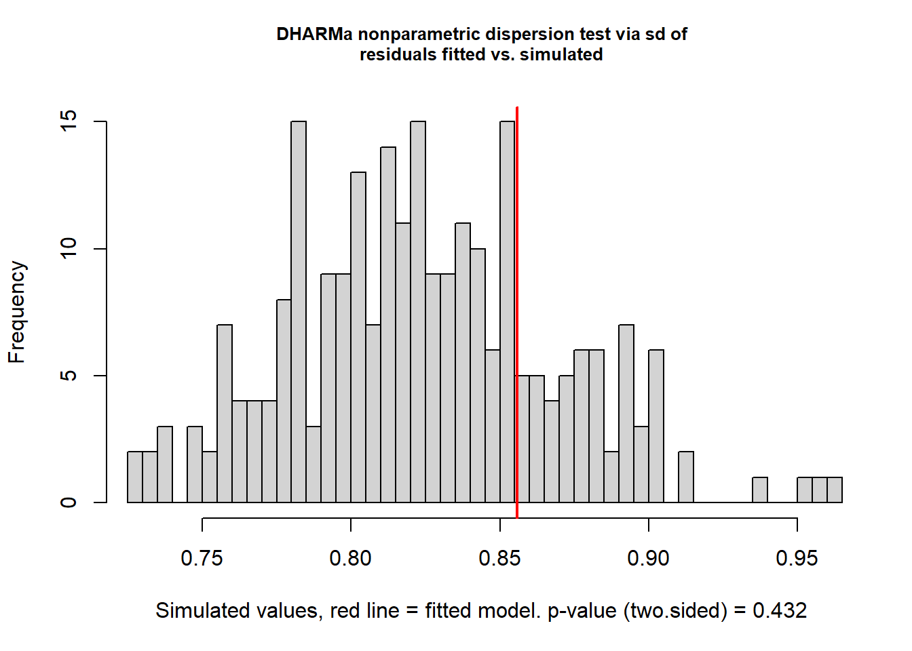
DHARMa nonparametric dispersion test via sd of residuals fitted vs.
simulated
data: simulationOutput
dispersion = 1.0383, p-value = 0.432
alternative hypothesis: two.sided# R2 for Mixed Models
Conditional R2: 0.554
Marginal R2: 0.273###Pour l’interaction site et session
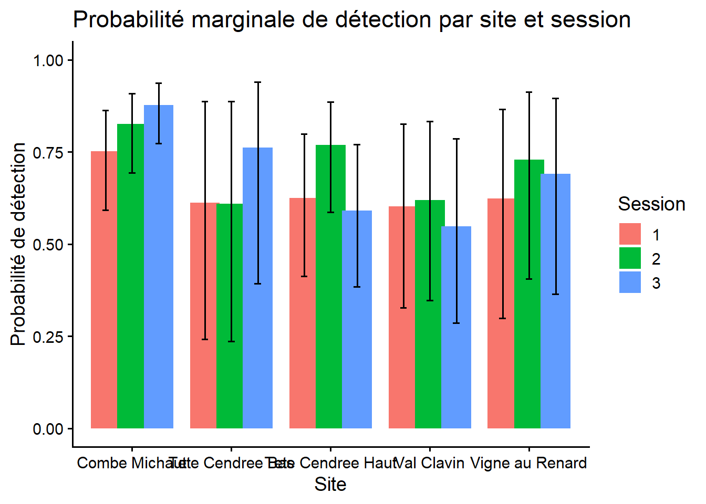
###Pour la taille
[1] 14.35401[1] 9.598805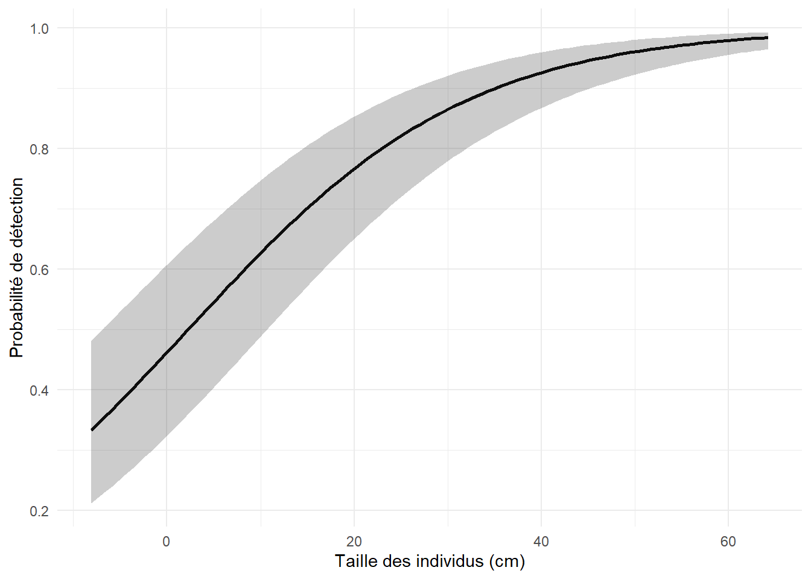
###Pour le nombre de ramets par quadrat
[1] 34.0973[1] 19.20647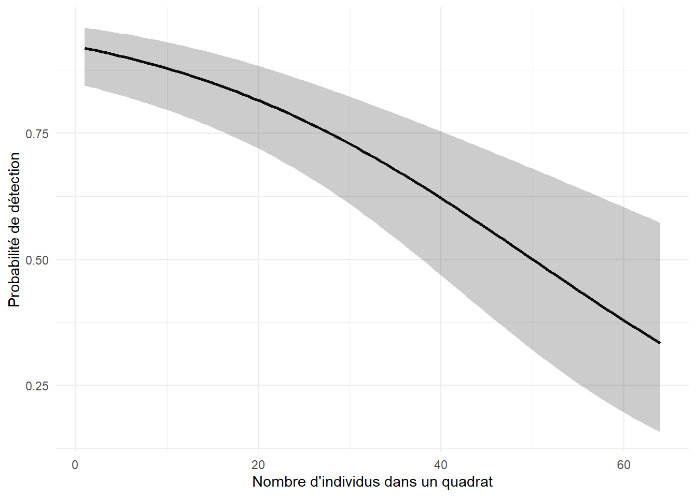
###Pour le risque d’erreur
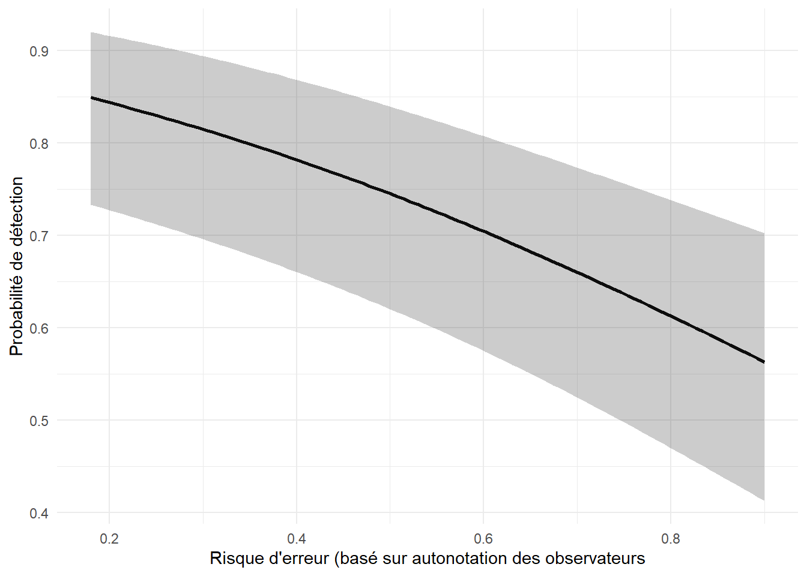
###Pour la strate herbacée
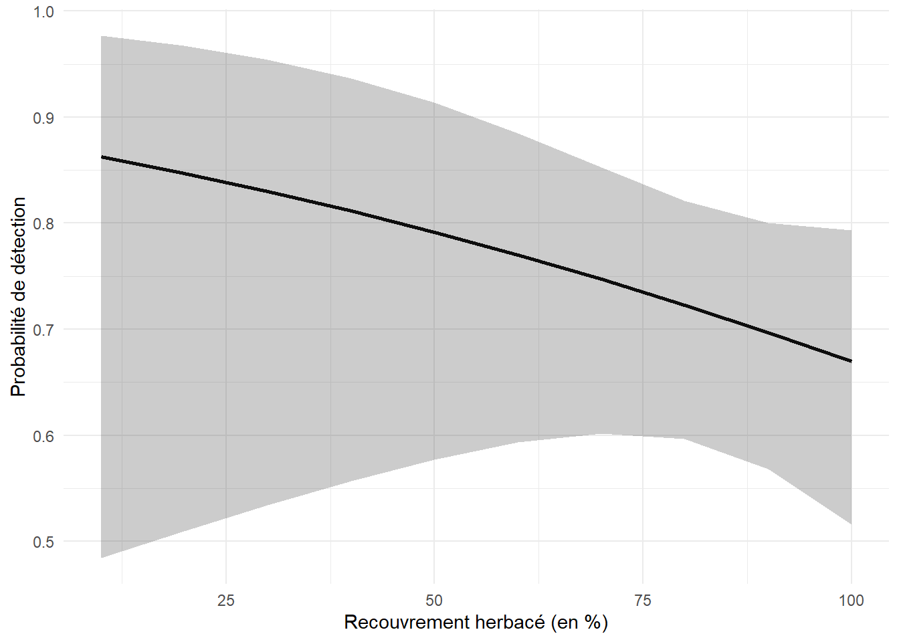
V.iv Probabilité de transition (Suite)
Transitions session 1 → 2
Sans Mark
Avec RMark
Transitions session 2 → 3
Sans RMark
Avec RMark